Association genevoise des amis du Salève
A G A S
Rapports annuels: 1999-2018
Sur cette page (extraits):
1999 |
2000 |
2001 |
2002 |
2003 |
2004 |
2005, Photo assemblée générale (AG) |
2006 |
2007 |
2008, Photo AG |
2009 |
2010, Photo AG |
2011, Photo AG |
2012, Photo AG |
2013, Photo AG |
2014, Photo AG |
2015, Photo AG |
2016, Photo AG |
2017, Photo AG |
2018, Photo AG |
Extrait du rapport annuel de l'année 1999
Les couples sont rares. En cas de mauvais temps le pourcentage des hommes est plus élevé. Il est très difficile de satisfaire tout le
monde: cadence trop lente ou trop rapide, trop ou pas assez d'arrêts, arrêts trop longs ou trop courts, pas assez de participants ou trop de
participants, choix du sentier. Nous essayons de maximiser le plaisir. Tout le monde n'a pas compris que la marche dans un groupe implique certaines
obligations, une certaine adaptation au groupe.
En 1999, pour une raison inconnue, nous n'avons pas pris les voitures, même pas une fois (excepté
les sorties avec Oxygène 74). Cette année nous avons formé fréquemment deux et parfois trois groupes pour plusieurs destinations
et à différentes cadences. Les jeunes étaient relativement nombreux (dans beaucoup de clubs de marche les jeunes font défaut).
Le 21 novembre 1999, une première: une dame qui avait de la peine à descendre a commandé un taxi (le téléphérique était
en révision): 65 frs suisses jusqu'à Veyrier.
Extrait du rapport annuel de l'année 2000
Organiser une sortie chaque dimanche provoquera une dilution. Il faut tenir compte de la dynamique de groupe. Puisque la plupart des participants connaissent
le Salève, les gens se sentent plus libres de quitter le groupe à tout moment. De la même façon, la possibilité fréquente
de descendre en téléphérique tente plus d'un. Cette année nous avons emprunté le sentier du "Bois Mouton"
plusieurs fois et à la grande satisfaction de tout le monde (c'est le sentier le moins glissant en hiver).
L'idée des dimanches intermédiaires,
c.-à-d. les dimanches autres que le 1er et 3me du mois, a séduit plusieurs personnes et la moyenne annuelle pour ces dimanches était de
4 personnes.
- Le bal annuel du vendredi 28 janvier 2000 à l'hôtel Calvy à Genève n'a réuni que 17 personnes.
- Le 3 septembre 2000
nous avons organisé une sortie conjointe avec la section cyclotourisme du TCS (une vingtaine de personnes dans chaque groupe). Ils montaient en vélo,
nous à pied. Nous pique-niquons ensemble au restaurant de l'Observatoire.
Pourquoi est-il si difficile de trouver et de fidéliser des gens aimant
les randonnées en montagne (et non marcher sur le plat) et ayant l'aptitude physique pour le faire (1% de la population totale)? Ou en d'autres termes
: les raisons de la non-participation aux courses.
Extrait du rapport annuel de l'année 2001
Les gens téléphonent pour demander des renseignements. Ils cherchent une voix sympathique pour les encourager à joindre le groupe, et ils
sont parfois ambivalents. Il est difficile de recruter des intéressés.
En ce qui concerne les accidents, le premier s'est produit en avril 1998 à la descente "Monnetier-Veyrier" quand il a fallu porter
Myriam la moitié du parcours. Il s'agissait d'une entorse (foulure) avec un ligament de la cheville gauche déchiré (à
la suite de quoi elle a porté une attelle en plastique pendant quelques mois). Le deuxième accident s'est produit au mois de mai 2000 lorsque
Isabelle a eu une foulure sur le trajet de la descente du restaurant de l'Observatoire à la station supérieure du téléphérique.
Le troisième et quatrième accidents se sont produits en 2001. En mars 2001, pendant la descente des Voirons, David s'est blessé
à la main gauche en tombant (le terrain était boueux et très glissant: trois points de suture à l'hôpital cantonal).
L'accident le plus grave est arrivé lors de la première sortie de septembre 2001; c'était sur le parcours de la montée
des Buis; en escaladant la petite paroi sans utiliser de corde, Béatrice s'est hissée à la force des bras; elle a trop forcé
sur son bras droit, ce qui a provoqué des déchirures à des tendons. Peu après, elle s'est heurtée au rocher et
s'est ouvert le front.
Une dame a expliqué une raison de sa non-participation. A savoir que des anciens ne l'ont pas intégrée. Ceci peut
être résolu si chaque ancien pense à s'occuper des nouveaux venus. Sur 100 personnes qui venaient pour la première fois
en 2001: 80 ont disparu après une fois, 8 après 2-3 fois, 5 après 4-5 fois, 5 viennent de temps en temps, 2 viennent souvent. Il est difficile
de fidéliser les nouvelles recrues. La montée du Salève demande un bon niveau sportif. Un des problèmes rencontrés par
l'AGAS est la différence de capacité physique (l'homogénéité) des participants. La vitesse de la montée ainsi que de la descente peuvent
varier et ainsi convenir ou ne pas convenir aux gens.
Quel est le comportement à adopter en joignant un groupe? En apercevant que quelqu'un a
de la difficulté à avancer, il y a trois choix: 1) le dépasser sans autre, 2) lui demander s'il souhaite qu'on reste avec lui,
3) vérifier si quelqu'un derrière est disponible pour rester avec lui. La première solution est assez égoïste et non conforme
à une attitude de montagnard. Par la force des choses, il y a actuellement toujours deux groupes (au moins): les rapides et les lents. Les nouveaux ne
sachant pas quel groupe joindre essaient de suivre les "rapides" et sont avertis à quel moment ils doivent attendre s'ils n'arrivent
pas. Le but de la sortie est toujours annoncé au départ. Les gens n'aiment pas rester sur place (surtout s'il fait froid). Les avantages
d'un groupe sont la convivialité et la sécurité (on profite des expériences des autres participants). Par contre, il faut
adapter sa cadence personnelle au groupe, c'est le principal inconvénient. La présence du groupe, avec tout son potentiel d'échanges
et de soutien, permet l'expression d'émotions que la vie courante contribue à comprimer, refouler, cadenasser.
En 2001, comme en 1999 et 2000, nous n'avons pas pris les voitures, excepté lors des sorties avec Oxygène 74. L'idée des dimanches intermédiaires,
c.-à-d. les dimanches autres que le 1er et 3me du mois, a séduit davantage de monde, et la moyenne annuelle pour ces dimanches était de
14 personnes. Grand merci à Hewlett-Packard Europe, à Meyrin, pour le don d'un ordinateur personnel et d'une imprimante ainsi
qu'à l'imprimerie Sro-Kundig à Châtelaine, pour la production des 600 dépliants cartonnés.
P.S.: La première
sortie de l'AGAS a eu lieu le dimanche 5 mai 1996. Par une belle journée, 9 hommes et 3 femmes sont montés par le Pas de l'Echelle et descendus
par la Grande Gorge.
Extrait du rapport annuel de l'année 2002
Depuis cette année, la distinction entre sorties officielles (c.-à-d. 1er et 3me dimanches du mois) et sorties non officielles (les autres dimanches)
a été abolie. La sortie du 24 novembre 2002 a été annulée car il pleuvait des cordes (quatre personnes se trouvaient au rendez-vous).
Sur 52 dimanches 24 étaient beaux, 3 beaux et chauds, 11 gris et sec, 6 gris avec pluie légère et 8 pluvieux
(dont un très pluvieux).
- Cette année, l'AGAS et Oxygène 74 ont participé activement à la première fête du Salève (organisée par
le syndicat mixte du Salève). Le 15 septembre 2002 le temps était beau. Nous nous sommes trouvés 70 au rendez-vous de Veyrier, et quelques heures
plus tard au sommet pour les festivités.
- La douzième édition de l'action "Salève propre" du samedi 26 octobre
n'a pas eu le succès souhaité, car ignorée par beaucoup de gens. Sur la cinquantaine de personnes présentes, il y avait tout
de même quelques membres de l'AGAS (comme par hasard, les mêmes que pour les éditions précédentes).
Pendant la seconde
moitié de l'an 2002, à cause des travaux de réfection de la plate-forme du parking, le rendez-vous a été déplacé
à la Mairie. Ceci nous a obligés à placer deux plantons: un à l'ancien terminus et un à la station de Veyrier-école,
pour indiquer aux gens où; aller. A la demande "y a-t-il des volontaires pour faire le planton?" ou "Voulez-vous faire le planton?", sur 8 personnes interrogées, 4 ont refusé net car ils voulaient aller au bistro ou n'avaient pas envie etc..., deux ont demandé
en quoi consistait leur tâche (ils vont réfléchir...) et deux ont accepté. étonnamment les nouveaux rendent plus facilement
service que les anciens.
Une fois sur trois la météo annonce qu'il fera trop froid, ou trop chaud, ou trop venteux, ou trop mouillé et une
fois sur deux elle a raison. Il y a ceux qui viennent par tous les temps, ceux qui ne viennent que s'il fait beau et ceux qui ne viennent que si la météo
annonce qu'il fera beau. Merci aux généreux donateurs (dont Isabelle qui a fait un don de 70 frs),
leur geste est grandement apprécié.
Extrait du rapport annuel de l'année 2003
- Le 12 janvier 2003, un journaliste de "Terre & Nature" se joignait à nous pendant toute la journée. Il a écrit un joli article
sur cette sortie.
- L'Assemblée générale a eu lieu au Salève en présence de 20 membres sur les 118 inscrits [42 hommes
(1/3) et 76 femmes (2/3)]. Les 3 bouteilles de vin rouge du pot de l'amitié offert par l'AGAS ont été liquidées, par contre,
l'unique bouteille de vin blanc également offerte a eu moins de succès.
- Le 11 mai nous avons organisé une sortie commune avec le Ski Club International de Genève. Dix personnes du SCIG sont montées
avec nous à pied. Huit autres personnes du SCIG sont montées en téléphérique et se joignaient à nous sur la crête.
- Le premier juin 2003, la journée de la grande manifestation du G8, malgré le beau temps, l'AGAS est partie avec 9 personnes et Oxygène 74
avec 5. Ce même jour, il y a eu la quatrième sortie conjointe annuelle avec la section cyclotourisme du TCS.
- Cette année, comme en 2002, l'AGAS
et Oxygène 74 ont participé activement le 14 septembre à la deuxième fête du Salève (organisée par le Syndicat
Mixte du Salève). Le temps était beau. Nous nous sommes trouvés 43 au rendez-vous de Veyrier, et quelques heures plus tard à la Croisette.
Puis, la moitié est retournée à Veyrier tandis que l'autre moitié s'est trouvée pour la suite des festivités
à la Tour des Pitons - point culminant du massif.
- Le 12 octobre 2003 un épais brouillard couvrait toute la montagne. Une nouvelle recrue n'arrivait
pas à suivre le groupe de tête et se trouvait toute seule sur le sentier. Elle ne voyait pas à 10 mètres et s'est sentie
abandonnée. Etant en tête, j'ignorais ce fait.
David Viry, en queue de peloton, accompagnant une dame qui avait de la peine à monter,
n'était pas non plus en mesure de s'occuper de la nouvelle venue. Ce cas d'école nous enseigne que les anciens devraient s'occuper
des nouveaux, surtout de ceux qui se trouvent isolés, pour que ces personnes ne se sentent pas abandonnées. Le 9 novembre il y avait un épais
brouillard jusqu'à 800 mètres d'altitude. Le groupe était très dispersé à la montée du Pas de
l'Echelle entre les bancs et la vierge. Tanya, ne connaissant pas le sentier, ne voyant personne ni devant ni derrière, a continué tout droit
au lieu de bifurquer à 90° vers la gauche (rochers peints en rouge). Elle arriva ainsi au début du sentier des Bûcherons, et malgré
l'avertissement inscrit sur le rocher, elle continua et parcourut seule ce très dangereux sentier. Ceci nous montre que chacun devrait garder
le contact visuel en permanence avec les deux personnes qui l'entourent (celle de devant et celle de derrière). Le chef de course ne peut pas
être partout en même temps.
- A la dernière sortie de l'année 2003, le 28 décembre, nous étions 6 hommes et pas de femmes - une première!
En 2003 le nombre moyen des participants par sortie a été de 20 personnes (minimum 4 le 16 février, maximum 41 les 4 et 11 mai). Sur
52 sorties, il y a eu (avec répétitions, c.-à-d. si une personne est venue 3 fois on ajoute 3 au total) 570 femmes (55%), 487 hommes
(45%), 13 enfants (et 29 chiens). Cette année nous constatons une légère augmentation du pourcentage des hommes. Au total, 1070 personnes dont 237 nouvelles
(20%) sont venues avec l'AGAS.
Sur 52 dimanches, 18 étaient beaux, 10 beaux et chauds, 16 gris et secs, 5 pluvieux et 3 neigeux. Depuis mai 1996
et jusqu'à la fin de 2003, il y a eu 5000 participants (1250 personnes différentes), et par sortie (qui est une coïncidence organisée):
minimum 4 personnes, maximum 55 personnes, âge minimum 6, âge maximum 85.
Notre site internet a subi un remodelage et a changé de fournisseur d'accès.
La fréquentation du site est bonne: 25 visiteurs par jour pendant 9 mois (1.4.2003 - 31.12.2003 , sans tricher...).
La loi de Darwin sur la sélection
naturelle fait que les lents nous abandonnent définitivement. Les sorties étaient diversifiées avant... hélas, depuis quelque temps,
pour la montée c'est toujours: soit le Pas de l'échelle (75%), soit la Grande Gorge (25%). En parcourant très souvent le Nord
du Salève, et étant donné que le téléphérique s'y trouve, il y a la possibilité de descendre par ce moyen. Le
noyau des fidèles n'excède pas 20 personnes. Il y a beaucoup de passages, des apparitions sporadiques et des abandons après la première
sortie. Sur 20 personnes, 6 sont assidues (12 à 24 sorties par an), 4 des habituées (6 à 12 sorties par an), 3 des occasionnelles (3
à 6 sorties par an), 3 très occasionnelles (1 à 3 sorties par an), 4 nouvelles.
En hiver, parfois, le terrain devient très glissant.
Ceci arrive par temps très froid après la pluie ou la neige. Ces cas exceptés, il n'est pas nécessaire de surveiller ses
pas, de sorte que le plaisir de la marche est plus grand. La promenade en altitude donne le goût de la montagne, de ses richesses naturelles, de son grand
air et de la beauté de ses panoramas. Après le pique-nique, souvent, nous nous sommes divisés en 2 groupes: les pressés (ou ceux qui
sont arrivés les premiers) et les autres. Concernant les bistros: jamais avant (au départ), rarement après (à l'arrivée).
Le dimanche 26 octobre 2003, David Viry était présent à 9h déjà au RDV pour accueillir les personnes qui ont oublié le décalage
horaire. Ce fait est à mettre en lumière surtout en observant l'attitude de certains participants quand le responsable de la course
leur demande un petit sacrifice comme: fermer la marche, rester en piquet à un endroit précis, rester avec "un lent" ou ralentir légèrement
leur cadence de marche. Personne ne veut perdre une parcelle de sa liberté pour prendre une quelconque responsabilité. Exemple d'un homme
: je remarque une jolie dame, donc j'ai envie de marcher avec elle, mais si je me charge d'un quelconque devoir, je ne pourrai pas la draguer,
etc... Beaucoup sont d'accord pour participer mais sans se "mouiller"... La formule de l'AGAS a tous les avantages: chaque participant
est seul et pas seul en même temps; c'est la quadrature du cercle réussie!
Extrait du rapport annuel de l'année 2004
l'AGAS a reçu un cadeau (un don) du Musée d'Histoire Naturelle. Il s'agit d'une maquette du Salève de 150 cm sur
36 cm sur 8 cm (H) en plâtre couvert d'un enduit (capaplex). Le moule a été fait en 1936 par M. Monnier. l'AGAS n'ayant pas de local, nous l'avons donné
au Syndicat Mixte du Salève, bâtiment Athena, F-74160, Archamps (France). Ils sont venu la chercher le 23 février.
- Une première historique: un février à 5 dimanches. Le 5ème dimanche de février, la montée au Salève est remplacée par une marche sur le plat à cause de la glace.
Nous marchons 4 heures le long de la Seymaz (2 heures à l'aller et 2 heures au retour). Nous pique-niquons au restaurant de la Gériatrie. Le soleil est
de la partie, le froid aussi.
- Il y a 3 ans, le 31 mars 2002, nous sommes 13 randonneurs à monter par la Grande-Gorge. A 14h30, après le pique-nique le groupe se scinde en 2: six marcheurs
descendent par le Pas-de-l'Échelle tandis que sept partent en direction du sud pour suivre la crête. Ces 7 courageux descendent par le sentier d'Orjobet. Vers
la bifurcation pour la Grande-Gorge dans la forêt au pied du Salève, ils rencontrent Max qui est en train de monter. Il les rejoint. Il est 17h30. Vers la bifurcation
pour la Petite-Gorge ils entendent les aboiements d'un chien. D'après Max ce chien aboie depuis au moins 2 heures. Un sous-groupe se forme pour aller voir
(Louis, David, Max, Rita, Isabelle), les autres continuent leur chemin. A 18h20 on arrive au chien (un colosse noir, labrador croisé bouvier bernois qui pèse
dans les 35 kg). Il est bloqué car la pente est très raide. Il n'arrive ni à descendre ni à monter. Nous pensons qu'il a suivi un animal. David appelle les
pompiers suisses à l'aide de son portable pour qu'ils avertissent les pompiers français. Les pompiers suisses ne font rien causant une perte de 15 minutes.
David réussit à appeler les pompiers français. Il reste à côté du chien pour le calmer. Celui-ci arrête d'aboyer. Rita et Louis vont à la rencontre des pompiers
au secrétariat du golf de Bossey. A 19h30, la nuit commence à tomber et David, après avoir passé une heure auprès du chien, décide de descendre. Le chien aboie
à tout-va. Rita et Louis amènent deux pompiers (qui sont venus d'Annecy) à 200m du chien. Il est 20h30. Les pompiers sortent leurs lampes frontales car il fait
nuit noire. Grâce aux aboiements ils repèrent le chien. Rita et Louis retournent au golf pour guider un troisième pompier qui arrive en renfort (il vient de
la Roche-sur-Foron). La tâche est ardue car le chien est lourd. Trente minutes après, les pompiers amènent le chien à leur caserne et notre équipe de sauveteurs
volontaires, amis des animaux en détresse, rentre à la maison.
- L'Assemblée générale du 25 avril 2004 a eu lieu au restaurant du téléphérique au Salève en présence de 28 membres sur les 133 inscrits [47 hommes (1/3) et
86 femmes (2/3)]. Les 3 bouteilles de vin rouge du pot de l'amitié offert par l'AGAS ont été liquidées. Dorith fait remarquer le fait que David paie de sa
poche le déficit de l'Association. A la suite de quoi, Gabriel a fait circuler une tirelire improvisée et 160 frs de dons ont été récoltés.
- Le dimanche 4 juillet 2004, une première: grâce à Claire et à la FEDRE, le minibus (la navette) nous amène au Coin [25 marcheurs (2 places vides dans le petit
bus)] d'où nous partons à pied pour atteindre le Grand-Piton en 2 heures pour les rapides et en 2h15' pour les « lents » (5 dissidents font la Vire
Bütikofer, une marcheuse abandonne). Depuis les Pitons, nous marchons vers la Croisette où le groupe se divise en 3: un sous-groupe descend par le sentier
du Facteur, l'autre emprunte la navette jusqu'à la station supérieure du téléphérique et le 3ème sous-groupe marche sur la crête vers la station supérieure du téléphérique.
Les 2ème et 3ème sous-groupes descendent en téléphérique.
Une dame rencontrée par hasard dans les rues de Genève, qui est venue avec nous il y a 5 ans, se plaint de la froideur de l'accueil des nouvelles personnes.
Les têtus et les inconscients. D'abord les têtus: ce sont des personnes qui s'entêtent à venir avec nous tout en sachant qu'elles n'arriveront
pas à suivre le groupe à la montée. Après un ou plusieurs abandons, elles ont compris et ne reviennent plus. Les inconscients ne connaissent pas notre groupe
et tout en se sachant faibles, viennent avec nous sans se soucier des problèmes qu'ils nous occasionnent.
- Cette année (comme en 2002 et en 2003), l'AGAS et Oxygène 74 ont participé activement, le 5 septembre, à la 3ème fête du Salève (organisée par le Syndicat
Mixte du Salève). Le temps était beau et chaud. Nous nous sommes trouvés 34 personnes au rendez-vous de Veyrier, et quelques 10 minutes plus tard au parking
du Coin (nous sommes véhiculés par la navette et quelques voitures privées). Cette année, nous ne sommes pas montés sur la crête mais longeâmes le piémont
pour aboutir à la ferme de Mikerne (2h30 à 3 heures de marche, 10 km, 300m de dénivellation positive).
- Les 2 derniers WE de l'année 2004 avaient les mêmes caractéristiques: un samedi ensoleillé suivi d'un dimanche pluvieux. Malgré cela nous étions 7 et 5 personnes
au RdV. Ces 2 derniers dimanches de l'année, nous nous déplaçâmes en voitures privées jusqu'au Coin et montâmes le sentier du Facteur vers la Croisette.
En 2004 (comme les années précédentes), le nombre moyen des participants par sortie a été de 20 personnes (minimum 4 le 18 janvier, maximum 55 le 25 avril).
Sur 52 sorties, il y a eu (avec répétitions, c.-à-d. si une personne est venue 3 fois on ajoute 3 au total) 572 femmes (55%), 492 hommes (45%), 15 enfants
(et 22 chiens). Au total, 1079 personnes dont 212 nouvelles (20%) sont venues avec l'AGAS (chiffres presque identiques à 2003). Sur 52 dimanches, 26 étaient
beaux, 1 beau et chaud, 18 gris et secs, 6 pluvieux et 1 neigeux. Depuis mai 1996 et jusqu'à la fin de 2004, il y a eu 6000 participants (1460 personnes
différentes), et par sortie (qui est une coïncidence organisée): minimum 4 personnes, maximum 55 personnes; âge minimum 6, âge maximum 85.
En hiver, parfois, le terrain devient très glissant. Ceci arrive par temps très froid après la pluie ou la neige. Dans ces conditions, il vaut mieux éviter
le sentier de la Grande-Gorge.
En 2004, nous avons fait 21 fois le Pas-de-l'Echelle, 11 fois la Grande-Gorge, 5 fois les Pitons, 4 fois l'Orjobet (dont 1 fois depuis le Coin et 3 fois depuis
Veyrier), 4 fois le Bois Mouton, 2 fois La Thuile, 2 fois le Facteur, 1 fois la Seymaz, 1 fois le Mikerne et 1 fois le funiculaire. Les Pitons ainsi que
La Thuile et Le Mikerne n'étaient pas réalisables sans la navette mise à disposition par la FEDRE pendant l'été. Il faut dire que la statistique ci-dessus concerne
le groupe officiel mais que presque toujours, il y a eu au moins un groupe dissident qui représentait jusqu'à la moitié des effectifs.
Extrait du rapport annuel de l'année 2005
L'année 2005 s'est déroulée de façon satisfaisante. Après un hiver long, froid et humide nous avons pensé que le printemps était
arrivé le 21 mars 2005. Pourtant, dimanche 17 avril, il neigeait en plaine. Toute la journée il pleuvait et il a neigé sans
interruption. Malgré cela trois courageux sont montés jusqu'au restaurant du téléphérique. Arrivant tout mouillés ils ont trouvé
porte close: le téléphérique ne fonctionnait pas et le restaurant était fermé. Ils ont alors pique-niqué dehors.
Ce jour-là nous avons battu le record vieux de neuf ans: le minimum de quatre personnes au rendez-vous était battu.
D'autres personnes qui avaient prévu de faire de la raquette aux chalets de la Balme au Col de sur Cou, à 1580m, pas loin de la
Roche Parnal (1900m), au départ d'Orange (1070m) à 15 km de la Roche sur Foron, qui est à 25 km de Genève donc 40 km de Genève,
ont dû rebrousser chemin car les routes étaient enneigées, (la neige a surpris tout le monde).
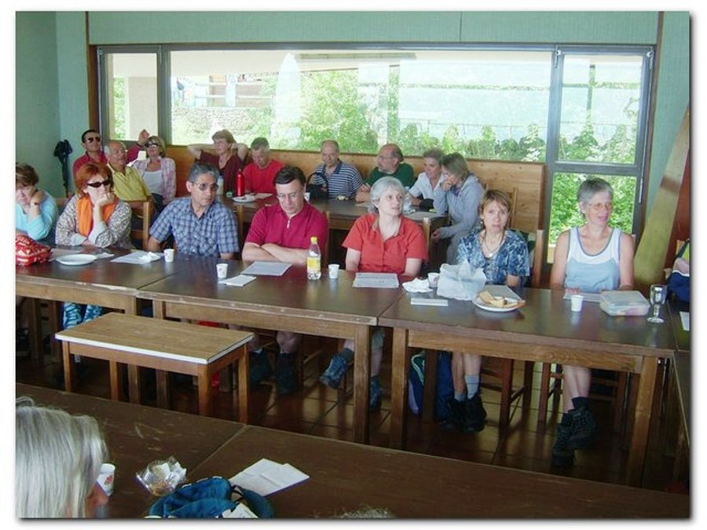
L'Assemblée générale du dimanche 5 juin 2005 a eu lieu au Salève au restaurant du téléphérique en présence de 33 membres sur les
103 inscrits [43 hommes (40%) et 60 femmes (60%)] ainsi que d'une vingtaine de sympathisants. Les cinq bouteilles de vin rouge ainsi
que les gâteaux du pot de l'amitié offert par l'AGAS ont été liquidés. Ursi a donné lecture du rapport du président, David a lu le
rapport du trésorier et celui des vérificateurs des comptes. Les trois rapports ont été approuvés à l'unanimité.
Georges Fleury ne souhaitant pas se représenter, Benoît Lenzen a été élu quatrième membre du comité. Le comité cherche des
volontaires pour encadrer le groupe. A la question " Qui souhaite effectuer des sorties ailleurs qu'au Salève? "
(sachant qu'il faudra payer les chauffeurs), vingt-cinq membres lèvent la main.
Une anecdote concernant le contact téléphonique. Après avoir hésité pendant cinq ans (car timide) une jeune femme a pris son
courage à deux mains et a appelé l'AGAS. En terrain inconnu elle répète " en fait " à chaque phrase. David le lui fait remarquer.
Elle se vexe et arrête aussitôt la conversation. L'oiseau s'est envolé et ne reviendra plus. Ceci ressemble à un oiseau qui pour
picorer s'approche d'un homme assis sur un banc. Un mouvement brusque de l'homme et l'oiseau s'envole. C'est également vrai
pour les sorties: une remarque mal perçue, une allusion, une discussion trop vive et la personne disparaît à jamais.
- Le dimanche 28 août David rencontre dans le bus numéro 8 un groupe féminin de gymnastique composé de treize dames venues de
Thurgovie pour marcher au Salève. A la question " Voulez-vous monter avec nous? " un silence assourdissant associé à une attitude
distante s'installe (on dirait ces dames subitement frappées par la foudre); et plus un mot de part et d'autre.
Trente minutes plus tard un groupe de dix-sept chinois arrive dans le bus numéro 8. A la question " Voulez-vous monter avec nous? "
ils répondent par un " oui " général et enthousiaste et montent avec nous ce jour-là.
- Cette année (comme en 2002, 2003 et 2004), l'AGAS et Oxygène 74 ont participé activement, le 4 septembre, à la 4ème fête du Salève
(organisée par le Syndicat Mixte du Salève). Le temps était beau et chaud. Nous nous sommes trouvés trente-et-une personnes au
rendez-vous de Veyrier, et quelque dix minutes plus tard au parking du Coin (la navette et trois voitures privées nous véhiculaient).
Cette année, nous sommes montés sur la crête par le sentier d'Orjobet (1h30 de marche, 600m de dénivellation positive).
Puis le gros de la troupe (car il y a cinq abandons) est véhiculé par un car de la Croisette vers les Dronières
(à 1,5 km au nord-est de Cruseilles). Après le pique-nique six courageux retournent au Coin à pied (3 heures de Vovray-en-Bornes
où nous nous rendons avec le même car pour une visite des carrières de silice abandonnées). Après la visite le car nous ramène aux
Dronières. Trois personnes rejoignent Oxygène 74 et retournent à pied à Vovray-en-Bornes (2 heures et demie de marche) puis en
voiture privée à Veyrier. Les autres retournent depuis les Dronières en car à Veyrier.
- Le dimanche 18 septembre 2005 nous nous trouvons dix-huit dans la dernière navette de l'année. Comme d'habitude, cinq personnes
(les dissidents) ont fait le Pas de l'Échelle. Au Coin, avant la deuxième votation, un sixième dissident quitte le groupe pour
entamer seul le sentier d'Orjobet. A une courte majorité le groupe décide de faire les Pitons (nous avons oublié les chasseurs...).
Tout se déroule bien jusqu'au poteau de "Sous le Piton" qui se trouve à 1250 mètres d'altitude. Lorsqu'un brouillard très épais,
à couper au couteau, nous plonge dans la nuit. André décide de procéder à un regroupement et à sa stupeur il s'aperçoit que nous
avons perdu Béatrice. La colonne de secours, constituée de Greg et d'André va à sa recherche. Nous ne savons pas à quel moment elle
s'est trompée et quelle direction elle a prise. Alors André va à droite sur la piste inférieure de ski de fond tandis que Greg prend
à gauche sur cette même piste. Nous postons Philippe et Marie sur la piste supérieure de ski de fond aux aguets au cas où Béatrice
s'apercevant de son erreur déciderait de remonter sur la piste supérieure (qui rejoint la piste inférieure un kilomètre plus loin).
Le reste du groupe essaie de trouver les Pitons dans le brouillard. Résultat des courses: huit personnes (sur dix-sept) arrivent aux
Pitons. Comme un vent très froid souffle fort tout le monde a hâte de partir (le problème c'est de trouver la D41). Sept personnes
partent tandis que David essaie de rejoindre Philippe et Marie. Il se trompe et rencontre quatre personnes qui tournent en rond
(ils ont perdu tout repère). Entre temps Béatrice a compris son erreur un peu avant La Thuile et a fait demi-tour. Elle rencontre
Greg qui marche en direction de La Thuile. Ils montent la piste supérieure du Ski de Fond et rejoignent Philippe et Marie. Une heure plus
tard tout le monde se retrouve à la Croisette [ordre d'arrivée à la Croisette: André Mabillard (13h30), Xavier, Benoît + cinq,
Greg + trois, David Viry + quatre (14h30)]. Tout est bien qui finit bien mais nous avons eu des sueurs froides. Conclusion:
méfie-toi du brouillard: on se trompe facilement dans le brouillard. Il faut rester groupé si le choix du sentier n'est pas évident.
En outre, le téléphone cellulaire passe ou ne passe pas.
- Dimanche 30 octobre 2005 sur le plateau de l'Observatoire, vers 15 heures, Claude P
et Rémy persuadent Marie-Madeleine de descendre avec eux le sentier des Bûcherons.
Malgré une opposition farouche de David et après de longues hésitations Marie-Madeleine
accepte. Un peu plus tard elle réalise que la mise en garde de David était
justifiée. Dimanche 20 novembre re-belote, Claude P persuade Benoît, Renée,
Catherine et Néné de descendre le sentier des Bûcherons avec lui. Renée, Catherine
et Néné jurent (un peu tard dixit le corbeau) qu'on ne les reprendra plus. Il
faut répéter sans relâche: " N'écoutez pas le chant des sirènes car la mort est
tout près! ".
-
Dimanche 27 novembre 2005 le temps est maussade. Malgré cela trente-cinq personnes montent par le sentier du Bois Mouton.
Seize personnes nous rejoignent grâce à la publicité faite par deux de nos membres auprès d'un club de rencontres nommé "Loisirs
Amitié les 2 Savoies " (LA2S pour les intimes, 170 membres) dont l'épicentre se trouve entre Annecy (Haute-Savoie), Albertville
(Savoie, 20 km au sud-est de Faverges) et Chambéry (Savoie, 40 km au sud-ouest d'Annecy).
- Dimanche 4 décembre 2005 le temps est nuageux, froid et il bruine. Nous montons le Petit Salève par le sentier des Voûtes via les
Eaux-Belles, une sortie combinée avec Oxygène 74. Ce sentier très dangereux (encore plus dangereux que celui des Bûcherons,
comportant des passages délicats et vertigineux sur 300 mètres) est à éviter à l'avenir. Pas d'accident à déplorer cette fois
(une personne sur quatorze a emprunté le sentier en balcon car craignant le vide).
- Les trois derniers dimanches de l'année avaient les mêmes caractéristiques: nuageux, froids et secs. Comme l'an passé à cette époque
nous nous rendons au Coin en voitures privées puis nous montâmes vers la Croisette par le sentier d'Orjobet, deux fois
(vingt personnes chaque dimanche) et par celui du Facteur, une fois (dix personnes le dernier dimanche de l'an).
En 2005 (comme les années précédentes), le nombre moyen des participants par sortie a été de 20 personnes (minimum 3 le 17 avril,
maximum 55 le 30 octobre). Sur 52 sorties, il y a eu (avec répétitions, c.-à-d. si une personne est venue trois fois on
ajoute 3 au total) 568 femmes (53%), 509 hommes (47%), 11 enfants (et 11 chiens). Au total, 1088 personnes dont 265 nouvelles (24%)
sont venues avec l'AGAS (chiffres presque identiques à 2003 et 2004). Sur 52 dimanches, 20 étaient beaux, 5 beaux et chauds,
13 gris et secs, 8 pluvieux et 6 neigeux. Depuis mai 1996 et jusqu'à la fin de 2005, il y a eu 7000 participants
(1700 personnes différentes), et par sortie (qui est une coïncidence organisée): minimum 3 personnes, maximum 55 personnes;
âge minimum 6, âge maximum 85.
Un nombre important de participants permet de former davantage de sous-groupes avec pour résultat une plus grande satisfaction générale.
Il y a de gens qui arrivent au rendez-vous avec une idée préconçue non négociable: si le vote est en leur faveur ils viennent avec
nous, sinon ils nous quittent. En hiver, parfois, le terrain devient très glissant. Cela arrive par temps très froid après la pluie
ou la neige. Dans ces conditions, il vaut mieux éviter le sentier de la Grande-Gorge.
En 2005, nous avons parcouru 25 fois le Pas-de-l'Echelle, 8 fois la Grande-Gorge, 4 fois les Pitons, 8 fois Orjobet
(dont 6 fois depuis le Coin et 2 fois depuis Veyrier), 1 fois le Bois Mouton, 2 fois La Thuile, 2 fois le Facteur
(dont 1 fois depuis le Coin et 1 fois depuis Veyrier), 1 fois le Coin et 1 fois le Petit Salève.
Les Pitons ainsi que La Thuile n'étaient pas réalisables sans la navette mise à disposition par la FEDRE pendant l'été.
Il faut dire que la statistique ci-dessus concerne le groupe officiel mais que presque toujours il y a eu au moins un groupe dissident
qui représentait jusqu'à la moitié des effectifs.
Il me faut mentionner l'accueil très sympathique du personnel du restaurant du téléphérique.
Un grand merci à la FEDRE qui nous a mis à disposition une navette pour nous ramener au Coin pendant l'été.
Merci également aux membres donateurs, leur geste est grandement apprécié.
Extrait du rapport annuel de l'année 2006
L'hiver 2005-2006 a été particulièrement froid, même si aucune vague de froid extrême n'a été relevée.
Calculées sur la période de décembre à février, les températures moyennes étaient très nettement inférieures aux normales
sur l'ensemble de la France. Avec un écart de la normale pour la saison de -1,5°C, c'est le dixième hiver le plus froid
enregistré depuis 1950, ex aequo avec l'hiver 1980-1981. L'hiver le plus froid depuis 1950 reste sans conteste l'hiver
1962-1963 avec un écart saisonnier de la normale de -5,1°C.
- Le dimanche 18 juin 2006 nous nous trouvons 24 (10 hommes et 14 femmes) au rendez-vous. Le temps est beau et chaud.
La météo annonce des orages l'après-midi. Nous décidons d'aller à la Croisette (une dame abandonne au Refuge du Salève,
une autre, toujours la même, disparaît après la grotte d'Orjobet). A la Croisette nous formons 3 sous-groupes:
8 personnes prennent la navette en direction de la station supérieure du téléphérique, 2 personnes entament la crête à
pied direction le téléphérique, 12 personnes décident aussi de gravir la crête à pied mais en direction de la Corraterie.
Un peu avant le Trou de la Tine l'orage gronde. Arrivant sous les voûtes de la Corraterie des rafales de vent très
violentes s'abattent sur nous; impossible d'avancer! Nous nous accrochons au rocher en nous mettant par terre.
Puis, nous avançons à 4 pattes afin de nous dégager de ce piège mortel. Bonjour les émotions fortes!
Par bonheur tout le monde s'en sort sain et sauf.
- Le dimanche 13 août 2006 nous étions 5 au rendez-vous. Il pleuvait. Trois personnes sont rentrées chez elles.
Deux personnes montent par le Pas-de-l'Echelle et sont descendues en téléphérique. Pendant la montée, trois gouttes de
pluies sont tombées. Vive le dimanche!
- Le dimanche 20 août 2006 nous partons du Coin en direction du Grand Piton. A 1300 mètres d'altitude 3 vagues successives de
randonneurs marchent sur le même nid de guêpes. Résultat: 8 piqûres: une à la 2e vague et 7 (dont 5 à la même personne!)
à la 3e vague.
- Cette année (comme en 2002, 2003, 2004 et 2005), l'AGAS et Oxygène 74 ont participé activement, le 3 septembre, à la
5ème fête du Salève (organisée par le Syndicat Mixte du Salève). Le temps était beau. Nous nous trouvons 50 personnes au
parking du Coin (grâce à la navette et quelques voitures privées). Cette année, comme en 2005, nous sommes montés sur la
crête par le sentier d'Orjobet (1h30 de marche, 600 m de dénivellation positive). Nous arrivons au Café des Crêtes à midi.
Oxygène 74 arrive depuis Etrembières une heure plus tard (ils sont 10). Puis plusieurs sous-groupes se forment.
Une personne rejoint Oxygène 74 et retourne avec eux à Etrembières via le Bois Mouton. Sur 45 personnes participant à la
balade géologique 13 viennent de l'AGAS.
- Le 10 septembre 2006, une participante a perdu ses lunettes optiques dans la forêt (valeur 1300 Frs). Nous avons téléphoné à
l'office genevois des objets trouvés (022'327'60'00; conseil reçu: il faut passer avec l'ordonnance du docteur), ainsi
qu'aux polices municipales d'Annemasse (F87'04'80), Collonges-sous-Salève (F43'75'50), Reignier (F43'40'03) et St-Julien
en Genevois (F35'19'25).
- Le premier octobre 2006 il pleuvait fort jusqu'à 11h30. Huit personnes se trouvent au rendez-vous de
10h00.
Deux personnes renoncent et rentrent chez elles. Six courageux (4 hommes et 2 femmes) montent le Pas-de-l'Echelle sous
une pluie battante. Ils arrivent à la station supérieure du téléphérique trempés jusqu'à l'os (mêmes les chaussettes!).
Quand on bouge ça va mais dès que l'on s'arrête alors bonjour la grippe et les refroidissements!
- En octobre 2006 Néné a nettoyé les escaliers du Pas-de-l'Echelle,
Rémy lui a donné un coup de main. Ce travail
leur a pris une dizaine d'heures, bravo!
Une réflexion en passant: un animateur doit avoir la peau épaisse (et dure!) pour supporter les remarques parfois
désagréables ou désobligeantes de certains participants, c.-à-d. ne pas être trop susceptible.
Autre réflexion: rétrospectivement en 10 ans deux erreurs ont été commises: 1) avoir débuté avec deux dimanches par
mois (avant de passer à tous les dimanches) et 2) ne pas avoir acheté tout de suite un nom de domaine pour le site
internet.
L'année 2006 s'est déroulée de façon satisfaisante. Trois records ont même été battus: la participation annuelle,
le minimum et le maximum de participation. 1183 personnes ont participé à nos sorties dominicales en 2006.
Le 13 août il pleuvait et pourtant 2 courageux ont escaladé le Pas de l'Echelle sous la pluie.
Le 11 juin nous étions 62 dont 20 personnes qui ont participé à l'assemblée générale annuelle.
L'assemblée générale du dimanche 11 juin 2006 a eu lieu au Salève à coté du restaurant du téléphérique sur la pelouse en
présence de 20 membres sur les 93 inscrits [soit 35 hommes (40%) et 58 femmes (60%)]. Benoît Lenzen a donné lecture du
rapport du président, David Viry a lu le rapport du trésorier et celui des vérificateurs des comptes.
Les trois rapports ont été approuvés à l'unanimité. Le comité cherche des volontaires pour encadrer le groupe... avis
aux amateurs!
Encore quelques statistiques pour l'exercice écoulé: En 2006 le nombre moyen de participants par sortie a été de 22
personnes (minimum 2 le 13 août, maximum 62 le 11 juin). Sur 53 sorties, il y a eu (avec répétitions, c.-à-d. si une
personne est venue trois fois on ajoute 3 au total,) 581 femmes (50%), 593 hommes (50%), 9 enfants (et 6 chiens).
Au total, 1183 personnes dont 262 nouvelles (22%) sont venues avec l'AGAS. Sur 53 dimanches, 15 étaient beaux, 4 beaux et
chauds, 8 beaux et froids, 17 gris et secs, 6 pluvieux, 2 neigeux et un variable. Depuis mai 1996 et jusqu'à la fin de
2006, il y a eu 8200 participants (dont 1960 personnes différentes), et par sortie (qui est une coïncidence organisée):
minimum 2 personnes, maximum 62 personnes; âge minimum 6, âge maximum 85.
En 2006, nous avons parcouru 24 fois le Pas-de-l'Echelle, 10 fois la Grande-Gorge, 7 fois le sentier d'Orjobet
(dont 2 fois depuis le Coin et 5 fois depuis Veyrier), 3 fois le Bois Mouton, 4 fois les Pitons (depuis le Coin),
2 fois la Thuile (depuis le Coin), 1 fois le Facteur (depuis Veyrier), 1 fois la Chavanne (depuis le Coin) et 1 fois le
Café des Crêts (depuis le Coin). Les randonnées par les Pitons ainsi que la Thuile n'auraient pas été réalisables sans la
navette mise à disposition par la FEDRE pendant l'été. Il faut préciser que la statistique ci-dessus concerne le groupe
officiel mais que presque toujours il y a eu au moins un groupe dissident.
Un grand merci à la FEDRE qui nous a mis à disposition une navette pour nous ramener au Coin pendant l'été et une
salle (avec des gâteaux!) pendant l'hiver (le restaurant du téléphérique étant fermé).
Merci également aux membres donateurs, leur geste est grandement apprécié.
Extrait du rapport annuel de l'année 2007
L'hiver 2006-2007 a été particulièrement doux. C'était probablement l'hiver le moins froid depuis cinq cents ans.
Avril 2007 était le mois d'avril le plus chaud depuis cent quarante ans.
Le dimanche 4 mars 2007 il fait très beau. Nous organisons une sortie conjointe: Oxygène 74 - AGAS. Deux groupes se
forment: 16 personnes montent au Salève à pied; 13 autres personnes prennent les voitures privées jusqu'aux Voirons
qu'elles gravissent ensuite à pied.-
Le dimanche 1er avril 2007 il fait gris et assez sec. Nous organisons une sortie conjointe: Oxygène 74 - AGAS.
Deux groupes se forment: 12 personnes montent au Salève à pied; 11 personnes vont en voitures jusqu'à la Vallée
Verte (quatre heures de marche; visite des meulières).
- L'assemblée générale du 15 avril 2007 a eu lieu sur le gazon près du restaurant (fermé) du téléphérique du Salève en
présence de 27 membres sur les 88 inscrits [33 hommes (37.5%) et 55 femmes (62.5%)] ainsi qu'une quinzaine des
sympathisants. Linda Kellner a donné lecture du rapport du président, André Mabillard a lu le rapport du trésorier et
celui des vérificateurs des comptes. Les 3 rapports ont été approuvés à l'unanimité. Benoît Lenzen ne voulant plus être
membre du comité (faute de temps), Catherine Roset est élue 4e membre du comité. Les autres membres du comité ainsi que
les vérificateurs des comptes se sont représentés et ont été réélus.
-
Le dimanche 29 avril 2007 trois dames prennent l'initiative de monter à la Dôle (en voiture privée jusqu'à La Givrine).
Personne d'autre n'étant intéressé, elles partent à 3 (2 heures de voiture et 5 heures de marche (3 h à la montée et 2 h
à la descente)). Le reste du groupe (à l'exception des 5 personnes qui vont au "Pas de l'Echelle") opte pour le sentier
d'Orjobet. Parmi le 37 personnes présentes 6 viennent grâce à Andra qui a publié une annonce sur le site internet
"Geneva on line" (actuellement nommé "Glocals").
-
Le dimanche 6 mai 2007 nous sommes 12 (le temps est incertain). Rémy et Danielle partent en voiture pour grimper au Mont Rond
(Jura). Les autres iront au "Pas de l'Echelle". Une fois sur la crête, 3 personnes continuent jusqu'à la Croisette puis
descendent par le sentier du Facteur (au cours de 2007 un petit groupe procède souvent de la sorte).
-
Le dimanche 27 mai 2007 nous sommes 13. Le temps est nuageux, il pleut avant 10 heures puis c'est quasi sec (quelques gouttes).
Quatre personnes optent pour le sentier des Buis (qui est un sentier dangereux), les autres montent par celui d'Orjobet.
-
Le dimanche 3 juin 2007 nous sommes 30 (le temps est beau). Neuf personnes empruntent le sentier d'Orjobet, cinq celui de Bois Mouton, 16
passent par le "Pas de l'Echelle".
-
Le dimanche 24 juin 2007 nous sommes 32 (le temps est beau). Six personnes grimpent par les Buis et les autres par Bois Mouton.
-
Le dimanche 1er juillet 2007 nous sommes 30 (le temps est beau jusqu'à 17 heures). Cinq personnes (dont 4 pour la première fois) grimpent par
les Buis, les autres par la Grande Gorge.
-
Le dimanche 22 juillet 2007 nous profitons pour la première fois cette année de la navette mise à notre disposition par la
FEDRE. Nous prendrons cette navette au cours des 11 prochaines sorties (à part la dernière sortie navette (le 30
septembre) les premières 10 sorties navette ont lieu par beau temps). La navette nous amènera au Coin 7 fois et à
Beaumont 4 fois. Nous irons à la Thuile, aux Pitons, à la Pointe du Plan, à Chavanne, Chez Marmoux, à
Mikerne et aux Convers.
- Cette année l'AGAS et Oxygène 74 ont participé activement, le 23 septembre, à l'inauguration de la Maison du Salève à Mikerne (une fête qui a remplacé la fête du Salève organisée annuellement par le Syndicat Mixte du Salève). Le temps était beau.
Nous nous trouvons 45 personnes à Beaumont (grâce à la navette et à quelques voitures privées). Depuis l'église de
Beaumont Georges amène le groupe en une heure de marche sur le plat à Mikerne. A 13h10 on part vers la Chartreuse de
Pomier. Ici deux groupes se forment: un groupe va aux Convers, l'autre à la Thuile. Tous le monde (sauf ceux qui
devaient récupérer leur voiture à Beaumont) se retrouve un peu plus tard à la Croisette. Presque tous prennent la
navette de 17h à la Croisette. Depuis la station supérieure du téléphérique 8 personnes descendent à pied (et arrivent
à 18h45 à Veyrier), les autres utilisent le téléphérique.
- Le 30 septembre 2007 le ciel est couvert et il y a du brouillard. 17 personnes prennent la navette. Depuis Beaumont elles
montent en direction de Chez Marmoux puis vers les Pitons. Le groupe passe à coté d'une bande de chasseurs. On ne les
aperçoit pas mais on voit leurs voitures et on entend leurs chiens. Ce n'est pas très rassurant... (pour l'an prochain,
si possible, il vaudrait mieux avancer la période de la navette de façon à terminer avant la chasse).
Encore quelques statistiques pour l'exercice écoulé: En 2007 le nombre moyen de participants par sortie a été de 22
personnes (minimum 5 le 11 février, maximum 49 le 17 juin). Sur 52 sorties, il y a eu (avec répétitions, c.-à-d. si une
personne est venue trois fois on ajoute 3 au total,) 586 femmes (50%), 580 hommes (50%), 3 enfants (et 13 chiens).
Au total, 1169 personnes dont 241 nouvelles (20%) sont venues avec l'AGAS. Sur 52 dimanches, 27 étaient beaux, 1 beau et
chaud, 5 beaux mais froids, 13 gris et secs, 2 pluvieux, 0 neigeux et 4 variables. Depuis mai 1996 et jusqu'à la fin de
2007, il y a eu 9400 participants (dont 2200 personnes différentes), et par sortie (qui est une coïncidence organisée):
minimum 2 personnes, maximum 62 personnes; âge minimum 6, âge maximum 85.
En 2007, nous avons parcouru 14 fois le Pas-de-l'Echelle, 13 fois le Bois Mouton, 10 fois la Grande-Gorge, 4 fois le
sentier d'Orjobet, 4 fois les Pitons (dont 3 fois depuis le Coin et 1 fois depuis Beaumont), 3 fois la Thuile (dont 2
fois depuis le Coin et 1 fois depuis Beaumont), 2 fois la Chavanne (dont 1 fois depuis le Coin et 1 fois depuis
Beaumont), 1 fois le Point du Plan (depuis le Coin) et 1 fois Mikerne (depuis Beaumont). Les randonnées par les Pitons,
la Thuile, la Chavanne, le Point du Plan ainsi que Mikerne n'auraient pas été réalisables sans la navette mise à
disposition par la FEDRE pendant l'été. Il faut préciser que la statistique ci-dessus concerne le groupe officiel mais
que presque toujours il y a eu au moins un groupe dissident.
Un grand merci à la FEDRE qui nous a mis à disposition une navette pour nous ramener au Coin et à Beaumont pendant l'été.
Merci également aux membres donateurs, leur geste est grandement apprécié.
Extrait du rapport annuel de l'année 2008
- Le 20 janvier un participant a mal à un genou à la descente à côté du tunnel. Il monte avec une randonneuse à Monnetier.
Les deux attendent un copain qui descend chercher sa voiture à Veyrier.
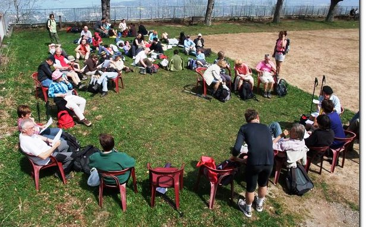
- L'assemblée générale du 27 avril 2008 a eu lieu sur le gazon près du restaurant (fermé) du téléphérique du Salève en présence de 32 membres sur les 96 inscrits [36 hommes (37.5%) et 60 femmes (62.5%)] ainsi que d'une quinzaine de sympathisants. Linda Kellner a donné lecture du rapport du président,
André Mabillard a lu le rapport du trésorier, David Viry celui des vérificateurs des comptes. Les 3 rapports ont été approuvés à l'unanimité.
Les quatre membres sortants du comité ainsi que les vérificateurs des comptes se sont représentés et ont été réélus. Il y a eu plusieurs
interventions des membres. Alain a proposé d'établir une liste des adresses électroniques des membres afin de pouvoir informer ces derniers
au sujet de projets de différentes sorties. Si un membre a un projet de sortie il doit en informer le comité. (Cette liste des e-mails a été
établie un mois après l'AG mais aucun projet alternatif n'a été proposé au courant de l'année 2008). D'autre part il a posé la question:
"Est-ce que l'AGAS souhaite augmenter le nombre des participants aux sorties?". Dans ce cas il suggère de faire plus de publicité y compris
à la TV. Après l'assemblée 20 personnes sont allées à la Croisette. Une personne est retournée par la crête, les autres descendaient au Coin
par le sentier du facteur puis jusqu'à Veyrier.
- Le dimanche 22 juin 2008 nous profitions pour la première fois de l'année de la navette mise à notre disposition par Veolia. Par la suite nous avons pris cette navette 10 fois au cours des 12 prochaines sorties (sauf un dimanche pluvieux et la fête du Salève). Nous sommes allés à la Thuile, aux Pitons, à la Pointe du Plan et à la Chavanne. A partir de ce dimanche et pendant tout l'été,
David, au nom de l'AGAS, a nettoyé (élagué) le sentier du Piton pendant 35 heures.
-
Le dimanche 20 juillet 2008 le bus est plein. André est obligé d'amener au Coin deux personnes dans sa voiture. Nous allons au Grand Piton puis à la Croisette que nous atteignons à 14h30. Plusieurs marcheurs prennent la navette de 14h30, d'autres attendent au bistro la prochaine navette de 15h30. À 15h00 changement de temps: 15 minutes de pluie légère puis 30 minutes d'orage. Plusieurs randonneurs sont mouillés jusqu'à l'os, entre autres André qui est en train de descendre le sentier du facteur accompagné de 3 personnes pour récupérer sa voiture au Coin ainsi que Gérard et Annie qui sont allés à la Thuile pour la fête annuelle. Les deux s'abritent à la Chavanne. Le paysan les amène dans sa voiture à la Croisette.
-
Le dimanche 17 août: pluie et ciel couvert jusqu'à 10h00 puis beau temps toute la journée. 17 personnes viennent au rendez-vous. Dans les autres clubs de marcheurs les gens s'engagent à l'avance et se sentent obligés de venir tandis que chez nous, n'étant pas engagés, ils renoncent plus facilement.
-
Cette année, l'AGAS a participé activement, le dimanche 7 septembre, à la 6ème fête du Salève, organisée conjointement par le Syndicat Mixte du Salève, le téléphérique du Salève et Veolia. De nombreux exposants, animateurs et producteurs se sont réunis à la gare supérieure du téléphérique. Ont eu lieu 9 marches d'une certaine difficulté qui ont relié les villages du piémont à la gare supérieure du téléphérique et une marche facile sur la crête du Salève reliant la Croisette à la gare supérieure du téléphérique. Sur les 9 marches deux étaient organisées par l'AGAS. Une marche d'une heure et demie depuis le
Bout du Monde (Genève) jusqu'à Veyrier et une marche de 2 heures depuis Veyrier jusqu'à la gare supérieure du téléphérique. À cause d'un manque de publicité sur Genève, mauvais temps le samedi et prévisions météorologique douteuses pour dimanche il n'y avait que 3 personnes au rendez-vous du Bout du Monde: David, André et Olivier avec ses 2 chiens. Les 3 longent l'Arve (longueur 100 km dont 10 km sur Genève). En cours de route ils acquièrent diverses connaissances concernant l'eau. (...)
Nos trois marcheurs rencontrent un obstacle: l'eau de l'Arve est montée et il est impossible de passer sans bottes. Ils font demi-tour. Olivier abandonne. David et André font de l'auto-stop pour arriver à l'heure à Veyrier.
- 30 personnes montent le Pas de l'Echelle le dimanche 14 septembre avec la dernière navette de l'année. Étant donné que la chasse a commencé nous empruntons le sentier d'Orjobet.
-
Le samedi 20 septembre 2008, quatre membres de l'AGAS ont participé à la journée "Salève propre". Le temps se maintenait couvert mais entrecoupé d'éclaircies. Une trentaine de personnes ont nettoyé le Salève en matinée.
-
Le 28 septembre 2008 nous montons par le Bois Mouton. Le même jour et à la même heure il y a une course: Les Bornes en VTT. Nous empruntons le sentier et croisons 200 vététistes qui le descendent. La cohabitation passe mal. Cette course change d'endroit chaque année.
-
Le 19 octobre 2008 un groupe dissident de 8 personnes monte par le Chalet de la Croix. Trois personnes montent par les Très-Arbres. Le gros de la troupe, 37 personnes, dont 25 jeunes, tous nouveaux, montent par le Bois Mouton. Ces jeunes nous rejoignent grâce à une annonce parue sur le site internet (...)
de ESN Geneva, (...) Exchange (ou "Erasmus") Student Network. (...). Même en créant trois groupes d'après la force physique
des participants (rapides, moyens et lents) trois étudiantes qui traînent se perdent. Quelle est la solution? Au moindre carrefour douteux, dessiner une flèche sur du papier ou construire une flèche en bois ramassé dans la forêt, à laisser sur le bitume pour les retardataires? Il n'est pas toujours facile d'encadrer un groupe de marcheurs. Si la distance entre les marcheurs est grande (pas de contact visuel) il y a un risque qu'un marcheur se trompe de sentier (et entraîne tous les suivants derrière lui).
-
Le 16 novembre 2008, 13 personnes se trouvent au rendez-vous. Au vote il y a majorité claire pour le Pas de l'Echelle même si les 3 dernières fois nous avons emprunté ce sentier. Il y a 2 raisons pour cela. 1) les gens souhaitent rentrer à la maison assez tôt; les peu pressés vont avec d'autres clubs. 2) les randonneursveulent arriver au soleil au plus vite (à
10h un brouillard couvre tout jusqu'à 900 mètres d'altitude).
-
Le samedi 22 novembre 2008 Greg et André « font » le Salève comme d'habitude; à la descente par la cabane du CAS à 20 mètres avant la vierge il y a des plaques de rocher qui sont très glissantes en cas de pluie (plusieurs personnes sont déjà tombées à cet endroit).
Ici, il faut absolument ralentir le pas c.-à-d. « marcher comme sur des oeufs ». Et ce qui ne devait pas arriver arrive: Greg a glissé, est mal tombé et a cassé en plusieurs endroits les 3 malléoles (...), fracture tri-malléolaire.
Greg a été
héliporté au stade de foot de Monnetier puis amené par ambulance à l'hôpital de Ville la Grand. Il était opéré d'urgence le lendemain à Genève (...).
- Les trois derniers dimanches de l'année affichent une moyenne de 5 personnes par sortie. L'hiver est arrivé très tôt avec beaucoup de neige. Le 14 décembre le Pas de l'Echelle était dangereux car très glissant, le dimanche suivant, moins glissant et le dernier dimanche de l'année, complètement sec donc pas du tout glissant.
Encore quelques statistiques pour l'exercice écoulé: En 2008 le nombre moyen de participants par sortie a été de 24 personnes
(minimum 4 le 21 décembre, maximum 55 le 27 avril). Sur 52 sorties, il y a eu (avec répétitions, c.-à-d. si une personne est venue trois
fois on ajoute 3 au total,) 649 femmes (51%), 618 hommes (49%), 4 enfants (et 27 chiens). Au total, 1271 personnes dont 355 nouvelles (28%)
sont venues avec l'AGAS. Sur 52 dimanches, 23 étaient beaux, 2 beaux et chauds, 5 beaux mais froids, 16 gris et secs, 3 pluvieux, 2 neigeux
et un variable. Depuis mai 1996 et jusqu'à la fin de 2008, il y a eu 10700 participants (dont 2550 personnes différentes), et par sortie
(qui est une coïncidence organisée): minimum 2 personnes, maximum 62 personnes; âge minimum 6, âge maximum 85.
En 2008, nous avons parcouru 29 fois le Pas-de-l'Echelle, 6 fois le Bois Mouton, 6 fois la Grande-Gorge, 3 fois le sentier d'Orjobet (dont 3 fois depuis le Coin et 0 fois depuis Veyrier), 3 fois les Pitons (depuis le Coin), 3 fois la Thuile (depuis le Coin), 1 fois la Chavanne (depuis le Coin), 1 fois le Point du Plan (depuis le Coin). Les randonnées par les Pitons, la Thuile, la Chavanne et le Point du Plan n'auraient pas été réalisables sans la navette mise à disposition par la FEDRE et Veolia pendant l'été. Il faut préciser que la statistique ci-dessus concerne le groupe officiel mais que presque toujours il y a eu au moins un groupe dissident.
Un grand merci à la Ville de Genève Département de la cohésion sociale, de la jeunesse et des sports, pour leur soutien financier. Un grand merci à la FEDRE et à Veolia qui nous ont mis à disposition une navette pour nous ramener au Coin pendant l'été. Merci également aux membres donateurs, leur geste est grandement apprécié.
Extrait du rapport annuel de l'année 2009
L'hiver 2008-2009 a été spécialement rude.
- Le 8 mars 2009, le temps est variable et sec, beaucoup de neige sur le Salève. Nous sommes 14 parmi lesquels 8 nouveaux dont 2 sont mal chaussés. Nous votons le Bois Mouton après 19 semaines de Pas de l'Echelle (depuis le 26.10.2008). A partir des bancs, devant l'entrée du château de Monnetier, 2 dissidents: Michel qui monte seul par la cabane du CAS, et Renée qui descend car elle est pressée. Par la suite, il se forme 2 groupes: les lents (8 personnes) et les très lents (4 personnes). Les 2 groupes arrivent au resto de l'Observatoire: les lents à 14h (4 heures de marche), les très lents à 15h après un détour. Ce retard est expliqué car la neige modifie beaucoup le paysage et David se trompe de chemin: il rebrousse chemin quelques mètres avant la Grange Gabi pour passer par la Grange Passet. Les très lents se sont enfoncés dans la neige jusqu'aux genoux (par endroits, jusqu'à un mètre de neige fraîche). Pour la descente, il y avait 3 groupes de 4 personnes chacun: les plus courageux qui descendaient à pied, les moins courageux qui descendaient en téléphérique, et le groupe de très lents qui descendaient en auto-stop avec Hans, ce qui a permis à Andréa de récupérer son bâton prêté à Sékou le matin.
-
Le Pas de l'Echelle (22.3.2009).
-
Le 5 avril, Claudia de Canal Onex (http://www.canalonex.ch) nous rejoint pour faire un reportage. Etant donné que le groupe est en mouvement, il est très difficile de nous filmer (sauf par hélicoptère!). Résultat des courses: on cherche des volontaires pour ralentir le pas. Trois personnes acceptent. Les quatre arrivent à la station supérieure du téléphérique en 4 heures au lieu des 2 heures habituelles. 2 heures de pellicules pour 10 minutes de film, avec 2 jours de travail.
- L'Assemblée Générale du 14 juin 2009 a eu lieu à la salle de réunion du restaurant « le Panoramique du Salève Horizon » à la station supérieure du téléphérique du Salève en présence de 25 membres sur les 101 inscrits [40 hommes (40%) et 61 femmes (60%)] ainsi que d'une dizaine de sympathisants. Les quelques bouteilles de jus de fruits et les sandwiches offerts par l'AGAS ont été liquidés. Shaia (14 ans) a donné lecture du rapport du président, David a lu le rapport du trésorier, André, celui des vérificateurs des comptes. Les 3 rapports ont été approuvés à l'unanimité. Les 4 membres sortants du comité et les vérificateurs des comptes se sont représentés et ont été réélus.
-
Le dimanche 21 juin 2009, nous profitons pour la première fois de l'année de la navette de bus mise à notre disposition par Veolia. Par la suite, nous prenons cette navette 8 fois au cours des 10 prochaines sorties en empruntant le sentier d'Orjobet, la Thuile, les Pitons, la Pointe du Plan et la Chavanne. A 2 reprises, la navette ne vient pas: les dimanches 28 juin et 5 juillet. Le 28 juin, nous faisons la Grande Gorge et une semaine plus, tard le Bois Mouton. -- Une femme qui vient d'acheter des bâtons n'arrive pas à les régler à la hauteur désirée. Michel et Olivier sortent de leurs poches des couteaux ayant un tournevis incorporé et règlent le problème.
-
Le mardi 30 juin 2009, 11 personnes (5 hommes, 4 femmes, 2 jeunes filles) dont quatre membres de l'AGAS participent à une excursion d'une journée sur le Salève dans le cadre du projet basecamp09 organisé conjointement par la Fondation Science et Cité et par l'Académie des sciences naturelles et ayant comme objectif de faire connaître la terre, le climat et l'environnement à un large public. Elles sont encadrées par Pascal Kindler, professeur au Département de géologie et paléontologie, Section des sciences de la terre et de l'environnement de l'UNIGE, Jérome Chablais et Fabienne Godefroid, doctorants. Nous montons en 2 minibus (départ à 9 heures d'Uni-Mail) jusqu'à La Bouillette (1200m, arrivée à 10 heures) puis à pied au Trou de la Tine et la Corraterie. Pique-nique (à 13 heures) puis les Rochers de Faverges via la table d'orientation à la borne 1307: panorama sur les Alpes (Station numéro 8). Puis une pause café à l'Auberge des Crêts (il est 15 heures) et retour à Genève (à 17 heures). A l'époque des dinosaures, il y a 100 millions d'années, la région genevoise ressemblait à la Floride actuelle. Il y a 30 millions d'années, une mer peuplée de requins recouvrait le plateau suisse. Enfin, il y a 20'000 ans, le climat était froid et le Salève recouvert de glace. Des indices géologiques datant de ces périodes se retrouvent dans les couches rocheuses du Salève. Ils sont observés lors de cette excursion. La formation de la montagne préférée des Genevois est également abordée.
- Le 19.7.2009 nous sommes allé à la fête de la Thuile.
- Le 9.8.2009 (5e navette) 14 personnes vont à la Tour du Grand Piton tandis que 15 personnes vont à la Thuile.
- Le 30.8.2009 (8e navette) nous sommes allé à la Thuile, puis au Point du Plan.
- Cette année (comme de 2002 à 2006 et en 2008), l'AGAS participe activement à la 7ème fête du Salève
le dimanche 6 septembre. Elle est organisée par le Syndicat Mixte du Salève. Le temps est beau. Le bus mis à notre disposition par Veolia est
plein. Trois personnes prennent leur voiture. Nous sommes 68 marcheurs au parking du Coin. Nous montons le sentier d'Orjobet et à midi,
le gros de la troupe arrive à la Croisette. De nombreux exposants, animateurs et producteurs sont réunis à la Croisette. 12 marches auxquelles
500 marcheurs (selon le Dauphiné libéré) ont pris part, relient les villages du pied du Salève à la Croisette. Le cadeau aux marcheurs cette
année est un sifflet (et non un T-shirt) et comme les années précédentes, il n'y en a pas assez pour tout le monde.
- Le dimanche matin du 13 septembre 2009, il fait frais (19 degrés), parfait pour marcher. Sans nous avertir, 40 étudiants universitaires Erasmus (European Region Action Scheme for the Mobility of University Students = le nom donné au programme d'échange d'étudiants et d'enseignants entre les universités et les grandes écoles européennes = ESN = Erasmus Student Network) se pointent au rendez-vous.
Nous sommes 78 marcheurs en tout, un record. Nous faisons le Pas de l'Echelle. Une jeune étudiante ayant de la peine à la montée abandonne
et redescend accompagnée de 3 amis. La plupart des étudiants descendent en téléphérique.
- Le 11.10.2009 nous sommes en route vers le sentier d'Orjobet.
-
Le dimanche 1er novembre, nous formons 2 groupes: Un groupe monte le Salève, l'autre découvre le massif des Voirons avec Oxygène 74. Les Voirons, situés au nord du Salève, en est la continuation naturelle, malgré l'interruption par la rivière Arve. Cette sortie couplée a diversifié notre éventail d'itinéraires. Elle a permis de faire découvrir d'autres horizons à nos adhérents. De plus, Oxygène 74 s'est préoccupé du patrimoine religieux en abordant l'histoire de Notre-Dame des Voirons et des monastères érigés autour du sommet.
-
Le dimanche 15 novembre 2009, journée nuageuse (quelques gouttes l'après-midi), nous formons 2 groupes: 8 personnes font le Pas de l'Échelle (3 hommes et 5 femmes) tandis que 8 personnes partent en voitures privées vers Beaumont (5 hommes et 3 femmes).
C'est Jean Sartre, un habitant de Beaumont, qui prend ce groupe. Ils partent à pied du parking du cimetière de Beaumont à 10h30.
Mary rejoint directement à Beaumont car elle habite Beaumont. Arrivé à La Thuile, comme l'abri est occupé par 4 personnes qui s'apprêtent
à faire une fondue, le groupe poursuit jusqu'au Grand Piton (pique-nique un peu avant l'arrivée au Piton, table près de la route). Ensuite
ils prennent la route en direction de Cruseilles sur environ 1,5km, en tournant à droite ils prennent la direction de la Thuile puis dans
l'épingle à cheveux sous le Plan du Salève à gauche pour aller aux Convers. Enfin descente à Pomier par le chemin des Convers en passant
devant la via ferrata Jacques Revaclier. Après un tour à l'ancienne Chartreuse qui vient tout juste d'être rénovée, ils traversent le bois de
Pomier avec un arrêt devant chacune des statues réalisées par Jo Brand. Puis retour au cimetière de Beaumont vers 16h par le hameau de Jussy.
- Le dimanche 22 novembre 2009, il pleut toute la journée (selon l'échelle inventée par DV, de 10h00 à 11h00 = 1/10, de 11h00 à 11h30 = 3/10, de 11h30 à 15h00 = 2/10). Nous sommes 19 personnes et nous montons le Pas de l'Echelle. Tout le monde descend en téléphérique.
- Le dernier dimanche de l'année, le 27 décembre, il fait beau jusqu'à 13h puis nuageux et sec. Jusqu'à la station supérieure du téléphérique ça ne glisse pas mais entre la station supérieure du téléphérique et l'Observatoire, c'est une patinoire.
Quelques statistiques pour l'exercice écoulé: En 2009, le nombre moyen de participants par sortie a été de 25 personnes (minimum 3 le 4 janvier et le 1er février, maximum 78 le 13 septembre). Sur 52 sorties, il y a eu (avec répétitions, c.-à-d. si une personne est venue trois fois on ajoute 3 au total,) 678 femmes (53%), 590 hommes (47%), 17 enfants (et 36 chiens). Au total, 1285 personnes dont 410 nouvelles (32%) sont venues avec l'AGAS. Sur 52 dimanches, 20 étaient beaux, 2 beaux et chauds, 4 beaux mais froids, 20 gris et secs, un pluvieux, 4 neigeux et un variable. Depuis mai 1996 et jusqu'à la fin de 2009, il y a eu 11960 participants (dont 2960 personnes différentes), et par sortie (chacune est une coïncidence organisée): minimum 2 personnes, maximum 78 personnes; âge minimum 6, âge maximum 85.
En 2009, nous avons parcouru 24 fois le Pas de l'Echelle, 8 fois le Bois Mouton, 7 fois la Grande-Gorge, 6 fois le sentier d'Orjobet (dont 2 fois depuis le Coin et 4 fois depuis Veyrier), 2 fois les Pitons (depuis le Coin), 4 fois la Thuile (depuis le Coin), 1 fois le Point du Plan (depuis le Coin). Les randonnées aux Pitons, la Thuile et le Point du Plan n'auraient pas été réalisables sans la navette mise à disposition par la FEDRE et Veolia pendant l'été. Il faut préciser que la statistique ci-dessus concerne le groupe officiel mais que presque toujours il y a eu au moins un groupe dissident.
Un grand merci à la Ville de Genève, Département de la cohésion sociale, de la jeunesse et des sports, pour leur soutien financier. Un grand merci à la FEDRE et à Veolia qui ont mis à notre disposition une navette pour nous ramener au Coin pendant l'été. Merci également aux membres donateurs, leur geste est grandement apprécié.
Extrait du rapport annuel de l'année 2010
- Le 10 janvier 2010 le temps est nuageux, sec et froid. A cause d'une importante chute de neige tombée la veille sur le canton de Genève les bus à Genève ne circulent pas avant 10 heures. Les chauffeurs attendent dans les 2 dépôts des TPG (Jonction et Bachet). À Genève, pas de chaines car les chaines démolissent la chaussée. À Lausanne, chaines (car en pente). La voirie a mal estimé la situation et il manque du sel. David prend un taxi pour se rendre au rdv (42 frs depuis la Gare). Six personnes se trouvent au rendez-vous. Deux personnes partent à 10h50 de Veyrier, elles montent et descendent à pied. Le téléphérique est fermé pour travaux. Cinq personnes sont véhiculées par Greg depuis la station supérieure du téléphérique jusqu'à Veyrier.
-
Le 14 février 2010, 5 personnes font le Pas de l'Échelle via le chalet de la Croix. jusqu'à Monnetier, peu glissant car peu de neige fraiche, plus haut, il y a de la neige fraiche. Au rocher, entre la vierge et le chalet de la Croix, Kristen (une nouvelle) glisse. Elle attrape l'arbre avec la main gauche et se déboite l'épaule gauche qui avait été opérée auparavant (luxation).
-
Le 21 février 2010, il fait beau.10 personnes font la Grande Gorge. Après le Rocher de 11 heures, à l'endroit où il y a encore la plaque (qui a disparu entre-temps) il y a 1 mètre de neige donc un passage très dangereux.
-
Le 7 mars 2010 nous sommes 15 personnes qui montons le pas de l'Échelle via le chalet de la Croix. Nous pique-niquons à la station supérieure du téléphérique. 5 personnes vont à la Croisette et descendent par le sentier du Facteur.
-
Le 18 avril 2010 il fait beau. 52 personnes dont la moitié de nouvelles font la Grande Gorge. 10 personnes descendent par le Bois Mouton tandis que 23 personnes descendent par le chalet du CAS. Les autres descendent en téléphérique.
-
Le 25 avril 2010, deux groupes se constituent. Une sortie conjointe avec Oxygène 74 (18 personnes) dont 10 de l'AGAS. Quatre voitures partent à 10h40 vers Fillinges pour les Meulières de Vouan (sur les Voirons et dans la Vallée Verte). Dénivelé: 460 m. Distance: 13 km). Quant à l'AGAS, nous votons après le rail: par deux fois 16 votent pour le Pas de l'Échelle et 16 pour Orjobet. Nous formons 2 groupes, chacun de 20 personnes. Pour le groupe qui fait Orjobet, pique-nique au Trou de la Tine puis 2 sous-groupes: un pour la Corraterie, un pour la crête.
-
Le 2 mai 2010, la météo se trompe en annonçant un samedi très pluvieux suivi d'un dimanche légèrement pluvieux. En réalité samedi peu pluvieux, dimanche pluvieux entre 8 et 11 heures. Conséquence: 6 personnes font le pas de l'Échelle (4 descendent en téléphérique et 2 par la Grande Gorge).
-
Le 9 mai 2010 a lieu le Trail du Salève. Nous montons par le pas de l'Échelle. Nous devrions prendre la voie VTT en allant à droite après les pierres mais nous n'y avons pas pensé. Résultat des courses nous croisons 160 coureurs qui descendent le pas de l'Échelle.
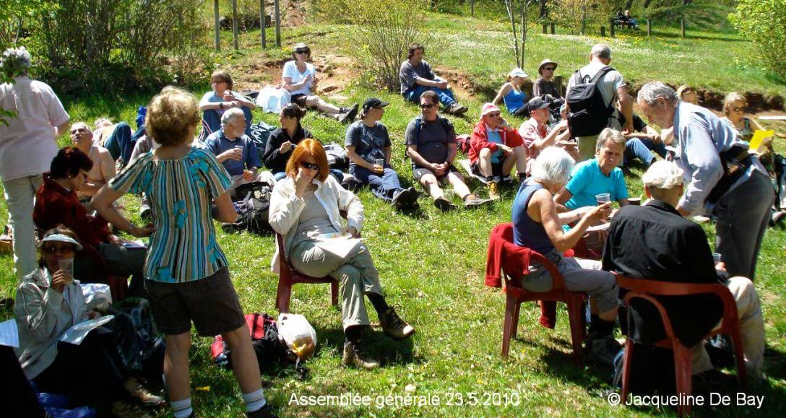
-
L'Assemblée générale du 23 mai 2010 a eu lieu sur le gazon à côté du Chalet Snack-bar à la station supérieure du téléphérique du Salève, en présence de 28 membres sur les 105 inscrits (40 hommes et 65 femmes) ainsi que d'une dizaine de sympathisants. Les quelques bouteilles de jus de fruits et les sandwiches offerts par l'AGAS ont été liquidés.
Emma a donné lecture des rapports du président et du trésorier, André Mabillard celui des vérificateurs des comptes. Les 3 rapports ont été approuvés à l'unanimité. Les quatre membres sortants du comité ainsi que les vérificateurs des comptes se sont représentés et ont été réélus. Néné suggère de demander des subventions à la mairie d'Annemasse. André Mabillard remercie Néné pour ses travaux de nettoyage des escaliers et de remise en forme de la vierge, Greg pour avoir véhiculé des gens en cas de besoin, David Viry pour son dévouement à l'association, Gérard, Martha, Louis et Claude J pour s'improviser de temps en temps comme guides.
-
Le Samedi 5 juin 2010, Monsieur Claude Jafflin, avec Oxygène74, a organisé une randonnée gratuite pour l'inauguration de la grotte d'Orjobet (Mt Salève) après les travaux. Le rendez-vous était au terminus du bus n° 8 à Veyrier-douane. Départ de la rando à 8h00. On marche jusqu'au Coin (200 mètres de dénivellation positive, une heure et demie de marche) puis on monte jusqu'à la grotte sur le sentier d'Orjobet (500 mètres de dénivellation positive, une heure et demie de marche). Puis on assiste à la cérémonie qui aura lieu à 11h00. A 11h30, le verre de l'amitié et dégustation de produits du terroir.
-
Le dimanche 6 juin 2010, l'AGAS (25 personnes) fait la Grande Gorge. David Viry abandonne aux deux tiers car il a un malaise. En plus, il y avait une sortie conjointe avec Oxygène 74 aux Rochers de Faverges (massif du Salève, 1'270 m d'altitude), depuis La Muraz, (Dénivelé: 450 m, Distance: 10 km) avec 21 personnes et un chien (qui est tenu en laisse lors de la traversée des troupeaux de vaches). Matinée ensoleillée. Ciel de traîne chaotique et fort vent l'après-midi. Pot au restaurant des Crêts, départ du resto à 15h. Le groupe avoue n'avoir rencontré personne sur le chemin du retour. 17h à la Muraz.
-
Le 13 juin 2010, Alain organise une sortie parallèle au lac Bénit. 7 personnes participent. 2 fois 35 km en voitures privées, dénivelé à pied 400 mètres, 10 frs. l'AGAS fait le Bois Mouton avec 31 personnes.
-
Le 20 juin 2010 la première navette nous amène au Coin. Forte pluie annoncée, en réalité variable. Dans la navette, 23 personnes. À part 4 dissidents qui font le sentier d'Orjobet, 19 personnes font la Thuile. Puis on marche vers la Croisette, puis soit à pied jusqu'au téléphérique soit en navette.
-
Le 27 juin 2010, 4 personnes partent avec Alain au lac de Lessy (au sud de Bonneville). Dans la navette, 42 personnes dont 2 restent dans le bus, 9 font le sentier d'Orjobet et 31 vont au Gd Piton.
-
Le 4 juillet 2010, Alain propose le Pas de Roc (plateau de Glières, dénivelé 400 mètres, 2h30 de marche, 10 frs). Personne n'est intéressé? il va seul. Nous faisons la Thuile puis le Point du Plan. Une jeune fille mexicaine portant un dictionnaire français-espagnol dans son sac à dos abandonne. Elle retourne seule à la frontière, prend le bus 44 et attend à l'arrêt de Veyrier-douane ses 2 copines avec lesquelles elle est arrivée au rendez-vous depuis Bonneville en France en voiture.
-
Le 8 août 2010 (8e navette), nous choisissons la Thuile. En arrivant à la partie vertigineuse, Fatma (une Portugaise de Mozambique) prend peur. Sa copine Maria avec l'aide de Néné l'encourage à passer l'obstacle.
David Viry met son veto et les 2 femmes rebroussent chemin.
-
Le 15 août 2010, la 9e navette part avec 2 journalistes du journal « Coopération » qui sont venus faire un article sur l'AGAS. Nous trouvant sans bus, nous montons le Pas de l'Echelle. Quatre personnes (David Viry, Claude
Personne, Emma, Fernanda) font de l'autostop pour essayer de rejoindre les journalistes à la Croisette. Nous les rencontrons et prenons ensemble une boisson au café des Montagnards. Puis, nous allons en navette jusqu'à l'Observatoire et nous descendons en téléphérique.
-
Cette année (comme de 2002 à 2006, 2008 et 2009), l'AGAS participe activement à la 8ème fête du Salève le dimanche 5 septembre qui a lieu cette année à la Thuile. Elle est organisée par le Syndicat Mixte du Salève. Le temps est beau. Le bus mis à notre disposition par Veolia (pour la dernière fois cette année) est plein. Emma amène dans sa voiture André Mabillard et Maguy au Coin. Nous sommes 56 marcheurs au parking du Coin. Les rapides arrivent à la Thuile après 1h40 de marche, les moyens apres 2h20, le dernier (DV) après 3 heures. De nombreux exposants, animateurs et producteurs sont réunis à la Thuile. 14 marches relient les villages du pied du Salève à la Thuile. Le cadeau aux marcheurs cette année est une couverture de survie de 140 x 220 cm (et non un sifflet ni un T-shirt) et comme les années précédentes, il n'y en a pas assez pour tout le monde.
-
Le 19 septembre 2010 une majorité part pour la Grande Gorge. Un père, une mère et un bébé sur le dos sont refusés par David.
-
Le 26 septembre 2010, 68 participants dont 50 étudiants Erasmus qui viennent d'arriver à Genève. Pique-nique au Trou de la Tine.
-
Le 10 octobre 2010, 28 personnes de l'AGAS font le Pas de l'Echelle. En plus, il y a une sortie conjointe organisée par Oxygène 74 au sud du Salève. Ce groupe de douze personnes et un chien (trois voitures privées) rejoint le hameau de l'Abergement au dessus de Cruseilles (880 m). Nos amis montent à pied au château des Avenières (1'056 m). Le temps est couvert. Ils pique-niquent avant les ruines du Vouarger. Puis ils continuent sur le Plan du Salève (1'348 m). Intéressante vue panoramique au dessus de la mer de brouillard qui recouvre le bassin genevois, la vallée de l'Arve et le plateau des Bornes. Retour par la pittoresque Combe Isabelle qui rejoint l'Abergement. Marche de 5 heures sur 11 km. Dénivelé de 500 mètres. Le trajet aller-retour entre Veyrier et l'Abergement fait 40 km.
-
Le 17 octobre 2010, nous faisons le Pas de l'Échelle. Un jeune homme avec sa copine et sa mère montent avec nous (nous sommes 15). Un peu avant la Vierge dans le rocher, la chaussure du jeune homme s'ouvre. Il faut attacher la
chaussure avec des ficelles.
-
Le 7 novembre 2010, le temps est maussade. 12 courageux (dont une famille avec 2 filles âgées de 10 et 8 ans et un couple d'amis) montent le Pas de l'Échelle. Le vent se lève et provoque l'arrêt du téléphérique. 3 personnes descendent en stop avec le chef de gare. André Mabillard appelle au secours sa fille qui vient en voiture le chercher ainsi que les deux dames et leurs deux filles.
-
Le 28 novembre 2010, il neige à Genève. Le temps est couvert mais sec. Le brouillard se lève et le soleil apparaît pour une courte période vers 12h00. 9 courageux montent le Pas de l'Échelle. 5 descendent en téléphérique. Quatre, après avoir pris un café au resto des bouddhistes, descendent à pied. David inaugure ses nouveaux crampons. C'est très laborieux de les mettre et aussi étonnant que cela paraisse de les enlever aussi. À 50 mètres de la vierge, il glisse sur les pierres couvertes de neige et tombe car avec les crampons, ça glisse davantage.
Encore quelques statistiques pour l'exercice écoulé: en 2010, le nombre moyen de participants par sortie a été de 23 personnes (minimum 5 le 17 janvier, maximum 72 le 23 mai, lors de l'assemblée générale annuelle). Sur 52 sorties, il y a eu (avec répétitions, c.-à-d. que si une personne est venue trois fois on ajoute 3 au total,) 634 femmes (52%), 578 hommes (48%), 22 enfants (et 17 chiens). Au total, 1234 personnes dont 340 nouvelles (27%) sont venues avec l'AGAS. Sur 52 dimanches, 29 étaient beaux, 16 gris et secs, cinq pluvieux, un neigeux et un variable. Depuis mai 1996 et jusqu'à la fin de 2010, il y a eu 13190 participants (dont 3300 personnes différentes), et par sortie (chacune est une coïncidence organisée): minimum 2 personnes, maximum 78 personnes; âge minimum 6, âge maximum 85.
En 2010, nous avons parcouru 24 fois le Pas de l'Échelle, 5 fois le Bois Mouton, 8 fois la Grande-Gorge, 7 fois le sentier d'Orjobet (dont 1 fois depuis le Coin et 6 fois depuis Veyrier), 2 fois les Pitons (depuis le Coin), 6 fois la Thuile (depuis le Coin), 2 fois la Chavanne (depuis le Coin), 1 fois le Point du Plan (depuis le Coin)(total = 55 car à 3 reprises il y avait 2 destinations différentes le même jour). Les randonnées aux Pitons, la Thuile, la Chavanne et le Point du Plan n'auraient pas été réalisables sans la navette mise à disposition par la FEDRE et Veolia pendant l'été. Il faut préciser que la statistique ci-dessus concerne le groupe officiel mais que presque toujours il y a eu au moins un groupe dissident.
Un grand merci à la Ville de Genève Département de la cohésion sociale, de la jeunesse et des sports, pour leur soutien financier. Un grand merci aussi à la FEDRE et à Veolia qui ont mis à notre disposition une navette pour nous ramener au Coin pendant l'été. Merci également aux membres donateurs, leur geste est grandement apprécié.
Extrait du rapport annuel de l'année 2011
Comité:
Président: David Viry. Membres: André Mabillard, Françoise Dayer, Catherine Roset. Vérificateurs des comptes: Dorith Fohry, Karine Kirchner.
- Dimanche 2 janvier 2011, il y a du brouillard et il fait froid. Sept hommes montent le Pas de l'Echelle par le Chalet de la Croix. (Où sont les femmes?)
-
Le 9 janvier 2011, on fête la raquette à neige à la Croisette. Il pleut toute la journée. 8 personnes sont au rendez-vous de 10 heures. Quatre montent le Pas de l'Echelle, dont deux continueront à pied jusqu'à la Croisette. Quatre personnes vont au Coin et empruntent le minibus affrété par les organisateurs, qui les emmène à la Croisette d'où elles partent avec les guides pour une découverte du secteur. Un repas chaud a été prévu bien à l'abri.
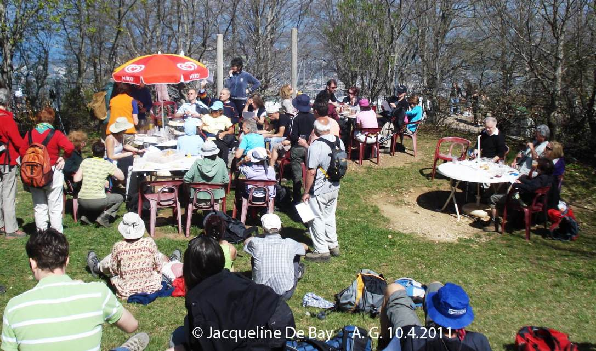
-
L'Assemblée générale du 10 avril 2011, a lieu sur le gazon à côté du Chalet Snack-bar de la station supérieure du téléphérique du Salève, en présence de 31 membres sur les 109 inscrits (42 hommes et 67 femmes). Etaient présents également une dizaine de sympathisants venus avec nous par le Pas de l'Echelle.
Les quelques bouteilles de jus de fruit et les sandwiches offerts pas l'AGAS ont été liquidés. Emma a donné lecture du rapport du Président. David Viry a donné lecture des rapports du trésorier et des vérificateurs des comptes. Les trois rapports ont été approuvés à l'unanimité. Les quatre membres sortants du comité ainsi que les vérificateurs des comptes se sont représentés et ont été réélus. David Viry est redevenu Président.
André Mabillard résume en quelques mots ses années de présidence. Alain remercie David Viry de son dévouement. Louis propose d'utiliser un micro (haut-parleur) l'an prochain. Ghani signale qu'il manque trois marches dans la grotte d'Orjobet. Emma souhaite plus de sentiers différents. Albert (Néné pour les intimes) propose le Petit Salève. David propose les Pitons et la Thuile. Ce jour-là deux paires de lunettes (une paire de lunettes optiques et une de soleil) ont été perdues! Mamma mia!
-
Dimanche 8 mai 2011 a lieu le Trail du Salève. Deux parcours possibles, un long de 37 km et un court de 17 km. Le départ est à l'église de Beaumont. Y participent 450 coureurs divisés par moitié pour chacun des parcours. Le premier coureur du petit parcours arrive au Pas de l'Echelle à 9h30. Le premier du plus long parcours arrive à 12h10.
Ce dimanche-là nous sommes une quarantaine d'Agassiens à faire le Bois Mouton en choisissant bien notre itinéraire de façon à ne pas gêner les coureurs. Malheureusement nous nous heurtons, (c'est le cas de le dire) à des vététistes furieux et outrés que nous osions marcher sur leurs plates-bandes! Il s'en est fallu de peu que l'altercation ne dégénère en pugilat.
-
Dimanche 15 mai 2011, la grande surprise c'est le temps! Alors que la météo avait prévu la pluie et la neige pour toute la journée, nous avons marché toute la matinée sous le soleil! L'après-midi c'était un peu plus mitigé, nous avons essuyé une ou deux petites tempêtes de neige.
-
Le 29 mai 2011, il fait beau. Nous sommes 55, dont 23 nouveaux parmi lesquels 16 étudiants de l'université de Genève. Nous faisons la Grande-Gorge. Quatre dissidents vont à Beaumont en voiture pour ensuite grimper aux Pitons.
-
Le 19 juin 2011, le minibus prévu par Veolia ne vient pas. Sept personnes l'attendent en vain pendant 20 minutes, puis se décident à monter à pied par le Pas de l'Echelle. Elles nous rattrapent vers le téléphérique.
-
Le 26 juin 2011, 39 personnes sont au rendez-vous. Le minibus emmène 19 personnes au Coin dont 14 font le Piton et 5 la Thuile. Parmi le 20 autres n'ayant pu monter dans le minibus, 16 font la Grande-Gorge et 4 le Pas de l'Echelle.
-
Le 3 juillet 2011, 32 personnes sont au rendez-vous. Le minibus amène 16 personnes au Coin, elles feront toutes la Thuile. Onze personnes, depuis Veyrier font la voie de l'ancien train (funiculaire) en passant par le cimetière de Monnetier. Les cinq autres personnes vont à Beaumont en voiture et font la Thuile.
-
Le 10 juillet 2011, 20 personnes sont au rendez-vous. Il pleut, il grêle, il tonne. Plusieurs personnes renoncent. Le minibus arrive en retard. Il nous croise au passage de la D1206 et six personnes montent à bord. Elles font la Chavanne. Les 14 autres ont fait le Pas de l'Echelle. L'après-midi c'est le soleil.
-
Le 17 juillet 2011, il pleut fort. Quatre hommes et une femme sont au rendez-vous. Gérard est seul à vouloir monter mais renonce car il ne veut pas marcher tout seul. Nous libérons le minibus et la course est annulée [c'est la 2e fois depuis 15 ans qu'une sortie est annulée (la sortie du 24 novembre 2002 a été annulée car il pleuvait des cordes)].
-
Le 24 juillet 2011: temps nuageux et sec. Le club « Montagne et Découvertes » dont le président est Roger Bracher, organise depuis 26 ans, en été, une fête communale à la Thuile. Le rendez-vous est à 10 heures. A 11 heures, vous pouvez assister à la messe en plein air devant la chapelle improvisée. A midi vous pouvez vous restaurer sous le chapiteau dressé devant l'ancienne ferme où pour quelques euros, vous sera servi un délicieux repas cuisiné sur place par les organisateurs.
Etant donné que l'AGAS cette année ne dispose que de 19 places dans le minibus, Emma, Jacqueline et Alain proposent de déposer des gens au Coin en allant aux Avenières pour rejoindre la Thuile en passant par
l'Iselet, le Vouarger et les Convers. La fête est annulée à cause de l'incertitude du temps. Mais on fait comme on a dit et 23 personnes se retrouvent à la Thuile vers midi. C'est la première fois en 26 ans que la fête de la Thuile est annulée. L'annulation a été annoncée à la mairie de Beaumont par des affiches et des panneaux lumineux.
Ce dimanche (24 juillet) 16 personnes ont pris le minibus, 13 sont montées par le Pas de l'Echelle et sept autres sont parties en 2 voitures, roulent vers le château d'Avenières. Ils marchent jusqu'à la Thuile.
-
Le 31 juillet il fait beau. 52 personnes sont présentes. Aucune ne veut monter dans le minibus. Quatre personnes roulent en voiture vers l'Abergement. Les 48 autres font le sentier d'Orjobet.
-
Le 7 août 2011, il pleut à 8 heures. La pluie cesse vers 10 heures. Le temps est ensuite nuageux et sec jusqu'à la fin de la journée. Nous sommes 10. Nous libérons le minibus. Huit personnes font le Pas de l'Echelle et deux le Bois Mouton.
-
Le 14 août 2011, nous sommes 26. La météo annonce du soleil le matin et de la pluie l'après-midi. En réalité il pleuvra entre 10 et 11 heures et le reste du jour sera sec. Quatre personnes vont aux Avenières en voiture et huit prennent le minibus pour faire le sentier d'Orjobet. Les 14 autres font le Pas de l'Echelle.
-
Le 21 août 2011, nous sommes 35. Le minibus arrive à 10h10. Trois personnes montent dans le minibus et ensuite font la Thuile depuis le Coin. Les autres se divisent en quatre sous-groupes dont un va aux Pitons depuis Veyrier (4 personnes), un autre à la Grande-Gorge (21 personnes), un troisième fait le sentier du funiculaire (4 personnes), et le quatrième va à Beaumont en voiture pour ensuite faire la Thuile et les Pitons (3 personnes).
-
Le 28 août 2011, nous sommes 44. Le minibus part au complet et les 19 personnes font le Piton. Les vingt-cinq autres font le Pas de l'Echelle.
-
Le dimanche 4 septembre 2011 c'est le mont Salève en fête sur le site de l'Observatoire. Le temps est maussade (pluie ininterrompue, ciel bas et gris, absence de visibilité).
Trois cents courageux marcheurs et cyclistes venus des villages alentour ont tout de même gravi le Salève. Nous sommes 20 Agassiens venus par le Pas de l'Echelle.
-
Le 11 septembre 2011, il fait beau. La navette en minibus vers le Coin c'est fini pour cette année. Nous sommes 45 et nous répartissons en trois groupes. Cinq personnes font le sentier d'Orjobet.
Quatorze le Bois Mouton. Et vingt-six le Pas de l'Echelle.
-
Le 25 septembre 2011, nous sommes 71 dont 27 nouveaux. Seize personnes vont faire le Pas de l'Echelle et 55 la Grande-Gorge.
-
Le 2 octobre 2011, nous sommes 90, dont 40 nouveaux. Trois personnes font le Piton (depuis Veyrier). Cinq personnes vont à Beaumont en voiture pour rejoindre également le Piton. Quatre font le Pas de l'Echelle. Quatre autres roulent vers Cran-Montana. Dix-sept empruntent le sentier d'Orjobet et 57 font la Grande-Gorge. Contrairement au 25 septembre, nous restons groupés jusqu'au départ de la Grande-Gorge. A la montée, des gens se sont postés aux endroits susceptibles d'éloigner les marcheurs du sentier, alors nous barrons les directions non appropriées par des branches.
-
Le 23 octobre 2011, nous sommes 45. Vingt personnes font le Pas de l'Echelle. Dix-huit le sentier d'Orjobet et sept le Bois Mouton.
-
Le 30 octobre 2011, nous sommes 51. Vingt-six vont faire le Bois Mouton. Seize le Pas de l'Echelle. Neuf vont faire la Grande-Gorge.
-
Dimanche 11 décembre 2011, 34 personnes montent et descendent à pied car le téléphérique est en révision annuelle pour trois semaines. Cinq personnes font la Grande-Gorge. Quatre le Pas de l'Echelle et 25 font le Bois Mouton.
Encore quelques statistiques pour l'exercice écoulé.
En 2011, le nombre moyen de participants par sortie a été de 32. Avec un minimum de 7 personnes le 2 janvier, et un maximum de 90 le 2 octobre.
Sur 51 sorties, (une sortie annulée le 17 juillet pour cause de déluge), il y a eu (avec répétitions, c'est-à-dire que, si une personne est venue trois fois, on ajoute 3 au total):
913 femmes (57 %), 700 hommes (43 %), 29 enfants (et 17 chiens).
Au total, 1642 personnes dont 483 nouvelles, (29 %) sont venues marcher avec l'AGAS.
Sur 51 dimanches, 31 étaient beaux, 13 gris et secs, 5 pluvieux, 2 variables et 0 neigeux.
Depuis mai 1996 et jusqu'à fin 2011, il y a eu 14'830 participants, dont 3'780 personnes différentes, et par sortie chacune étant une coïncidence organisée -: minimum 2, maximum 90. L'âge minimum est de 6 ans et l'âge maximum de 85 ans.
En 2011, nous avons parcouru:
---------------- 31 fois le Pas de l'Echelle,
---------------- 12 fois le Bois Mouton
---------------- 12 fois la Grande-Gorge
----------------- 6 fois le sentier d'Orjobet (1 fois du Coin, et 5 fois de Veyrier)
----------------- 3 fois le Funiculaire
----------------- 2 fois le Piton (depuis le Coin)
----------------- 2 fois la Thuile (depuis le Coin)
----------------- 1 fois la Chavanne (depuis le Coin)
Total -------- 69
(A 18 reprises il y avait au moins deux destinations différentes le même jour.)
Les randonnées aux Pitons, la Thuile, la Chavanne et la Pointe du Plan sont réalisables sans la navette mise à disposition
par la FEDRE et Veolia pendant l'été. Il faut préciser que la statistique ci-dessus concerne surtout le groupe officiel,
mais que presque toujours il y a eu au moins un groupe dissident.
Un grand merci à notre ministre des sports, Monsieur Manuel Tornare pour le soutien financier de la ville de Genève. Un autre grand merci à la FEDRE et Veolia qui ont mis à notre disposition une navette pour nous emmener au Coin pendant l'été. Merci également aux membres donateurs. Leur geste est grandement apprécié.
Extrait du rapport annuel de l'année 2012
Comité: Président: David Viry. Membres: André Mabillard, Françoise Dayer, Catherine Roset, Martha Muñoz. Vérificateurs des comptes: Dorith Fohry, Karine Kirchner.
- Le 15 janvier 2012 c'est en France la journée nationale de la raquette à neige à la Croisette. Il fait beau. Nous sommes 62 (37 hommes et 25 femmes). 14
jeunes gens du programme Erasmus, tous ayant un BA, effectuant un stage de 6 mois dans différentes entreprises à Genève ainsi que 12 jeunes hommes visitant le CERN pendant une semaine. 25 personnes montent par le sentier d'Orjobet; 37 par le Pas de l'Echelle. 42 personnes vont à la Croisette.
-
Le 5 février 2012 le temps est nuageux et froid (-10°). Il neige légèrement à 10 heures. Quatre courageux (2 hommes et 2 femmes) montent le Pas de l'Echelle. Annie descend à pied, les trois autres en téléphérique.
-
Le 12 février 2012 rebelote. Le temps est nuageux et froid (-8°). Un homme et une femme renoncent et vont au bistro. Sept courageux (4 hommes et 3 femmes) montent le Pas de l'Echelle. Là-haut il fait -14°. Quatre personnes descendent à pied, les trois autres en téléphérique. En haut de l'escalier du Pas de l'Echelle, sur 10 mètres, au ru (= petit ruisseau), la glace atteint une épaisseur importante. Le passage de la main courante côté rocher vers côté vide est très risqué (sur celle-ci la rambarde est cassée en deux endroits). Les 2 mains courantes côté rocher sont distancées de 10 mètres.
-
Le samedi, 18 février 2012, David installe un panneau au départ du sentier de Pas de l'Echelle, vers la ferme aux chiens, après le pont sur l'autoroute: « Avertissement: Danger: passage verglacé au ru vers la partie supérieure des escaliers ». Quand le soleil brille, les gens ne se rendent pas compte du danger.
-
Le 19 février 2012 le temps est nuageux avec neige mouillée entre 13h et 14h et brouillard épais entre 15h et 16h. Nous sommes 12. Le Pas de l'Echelle est glacé. Nous allons tous au Coin. Deux personnes retournent à Veyrier depuis le Coin. Deux autres font le sentier d'Orjobet. Huit personnes font le sentier du Facteur à la montée jusqu'à la Croisette puis marchent sur la crête et descendent en téléphérique.
-
Le 24 février 2012 le Syndicat Mixte du Salève pose une corde entre les deux mains courantes côté rocher en haut de l'escalier au Pas de l'Echelle. Le problème avec la corde c'est qu'elle est souple. Ce n'est pas du tout la même chose qu'avec le fer qui est solide. Le mieux serait de casser la glace car les personnes qui montent sans crampons, arrivant en haut de l'escalier, ne peuvent ni descendre ni monter car le sentier est trop glissant. Le sentier de la Grande-Gorge ainsi que celui d'Orjobet sont glacés également. Pour l'AGAS il n'y a que le Château d'Etrembières (Petit Salève) et le Facteur ou les Allumés.
-
Le 26 février 2012 il fait beau. Nous sommes 38 dont 17 jeunes gens. Trois hommes montent le Pas de l'Echelle malgré la glace. Quatre personnes roulent en voiture jusqu'au château d'Avenières et font un circuit dans la région. Quatre personnes roulent en voiture jusqu'à Monnetier puis marchent sur la crête jusqu'à la Croisette, puis trois personnes descendent le Facteur tandis que le chauffeur retourne à Monnetier. 27 personnes vont jusqu'au château d'Etrembières en longeant le chemin de fer et l'autoroute au pied du Petit Salève. Le bruit est épouvantable pendant 30 minutes. À Monnetier nous visitons la Grotte de Bellevue à côté de l'ancienne mairie, puis nous montons par l'ancien funiculaire jusqu'à la station supérieure du téléphérique.
-
Le samedi, 3 mars 2012, David enlève le panneau au départ du sentier du Pas de l'Echelle car la glace a fondu.
-
Le 4 mars 2012 nous sommes 47 (21 hommes, 24 femmes, 2 enfants et 2 chiens). Il fait beau. 12 personnes montent le Pas de l'Echelle tandis que 34 montent le Bois Moutons. Marion perd le groupe à Monnetier et rentre à Veyrier.
-
Le 11 mars 2012 il fait beau et froid (bise). Quatre personnes montent les Buis. 31 personnes montent le Pas de l'Echelle. Une nouvelle oublie son manteau (avec fourrure) au chalet de la Croix. Elle se rend compte de cela vers le téléphérique. André accompagné de sa soeur aînée descend pour chercher le manteau qui entre-temps a disparu (probablement ramassé par un automobiliste). Neuf personnes descendent par le Bois Mouton dont Chris qui perd son chien à mi-chemin et va le chercher. Le téléphérique s'arrête à 16h à cause du vent.
-
Le 18 mars 2012, il y a du crachin toute la journée. Nous sommes mouillés jusqu'aux os. 16 courageux (8 hommes et 8 femmes) montent le Pas de l'Échelle par le Chalet de la Croix.
-
Le 25 mars 2012 il fait beau. Nous sommes 43 (17 hommes, 23 femmes, 3 enfants). Trois personnes font le sentier des Bûcherons. 17 personnes font la Grande-Gorge, 23 le Bois Mouton.
-
Le premier avril 2012 il fait beau. Nous formons cinq sous-groupes: Pas de l'Echelle: 11 personnes, Grande gorge: 3, Orjobet: 13, Bois Moutons: 11, Petit Salève: 3, total: 41.
-
Le 22 avril 2012 le temps est variable alternant soleil et pluie. Six personnes vont au Piton, 11 personnes montent le Pas de l'Echelle.
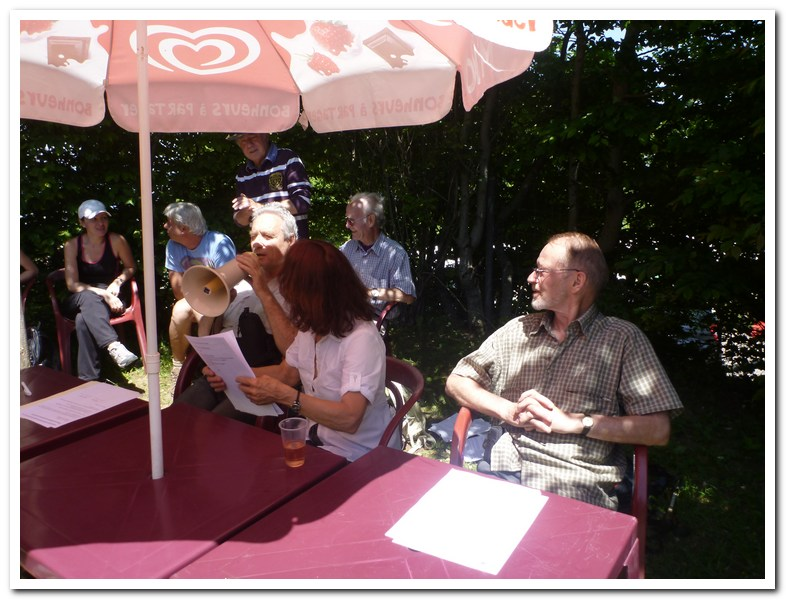
-
L'Assemblée Générale du 17 juin 2012 a eu lieu sur le gazon à côté du Chalet Snack-bar à la station supérieure du téléphérique du Salève, en présence de 40 membres sur les 114 inscrits (43 hommes et 71 femmes) ainsi que d'une vingtaine de sympathisants (nous montons par le Pas de l'Échelle). Les quelques bouteilles de jus de fruits et les sandwiches offerts par l'AGAS ont été liquidés. Emma a donné lecture (à l'aide d'un micro = haut-parleur) des rapports du président, du trésorier et des vérificateurs des comptes. Les 3 rapports ont été approuvés à l'unanimité. Les quatre membres sortants du comité ainsi qu'une nouvelle, en la personne de Martha Muñoz, ont été élus ainsi que les vérificateurs des comptes qui se sont représentés et ont été réélus. André Mabillard a remercié David Viry pour son dévouement. A la fin de l'AG, à 13h15, le téléphérique tombe en panne pendant 2 heures. Plusieurs cars sont appelés à la rescousse. Ils arrivent 2 heures plus tard à 15h00. Heure à laquelle le téléphérique fonctionne de nouveau (cela est arrivé 3 fois en 30 ans).
-
Le premier juillet 2012 il pleut toute la journée. Onze personnes montent le Pas de l'Echelle. Le téléphérique est en panne de 11h à 15h. Un bus arrive après une heure d'attente. Les passagers doivent payer pour le transport en bus.
-
Le 8 juillet 2012 deux personnes montent le Pas de l'Echelle. 16 personnes montent dans la première navette qui nous amène au Coin. Deux font le sentier d'Orjobet depuis le Coin. Les autres font la Thuile sauf DV qui nettoie le sentier puis descend vers Beaumont puis en auto-stop avec Rita. A la Thuile les 13 personnes pique-niquent. Puis départ à pied vers la Croisette en 3 sous-groupes: les rapides: (3), les moyens (6) et les lents (4). Les 6 moyens marchent de la Croisette jusqu'à la station supérieure du téléphérique, les autres prennent la navette.
-
Le 22 juillet 2012 c'est la fête de la Thuile. Il fait beau. Nous sommes 45. 5 personnes montent le Pas de l'Echelle. 20 personnes montent la Grande Gorge. 7 personnes sont transportées en navette vers le Coin puis montent à la Thuile. 5 personnes vont à pied jusqu'à la Thuile. 4 vont au Piton. 4 circulent en voiture jusqu'à Beaumont puis montent à pied à la Thuile.
-
Le 12 août 2012 il fait beau. Nous sommes 36. 8 personnes montent le Pas de l'Echelle. 15 personnes prennent le bus et font la Chavanne depuis le Coin. 13 personnes marchent depuis Veyrier jusqu'à la Chavanne. En sortant de la forêt ils la longent vers la gauche, passent par-dessus les barbelés et continuent 100 mètres plus bas que la D41 parallèle à la D41 et arrivent sur le D45 à 200 mètres de la Croisette.
-
Le 19 août 2012 il fait beau et chaud (32°). Nous sommes 49 (dont 21 nouveaux). 26 personnes montent le Bois-Mouton. 23 personnes le Pas de l'Echelle.
-
Le 26 août 2012 nous sommes 49 également. 15 personnes font la Grande Gorge. 9 personnes montent la Chavane depuis Veyrier. Le dernier bus de l'année amène 20 personnes au Coin. Une voiture privée amène 5 personnes supplémentaires au Coin. Depuis le Coin: 3 personnes montent aux Etournelles 13 vont à la Thuile, Quatre vont à la Chavanne, 5 montent les Allumés.
-
Le 2 septembre 2012 c'est la fête du Salève au Plan. Nous sommes 38. 12 personnes montent le Pas de l'Echelle. A la Pointe du Plan souffle une bise froide. 5 personnes montent au Plan via la Chavanne. 8 personnes vont au Plan via la Thuile depuis Veyrier en 4h30. 6 personnes dans 2 voitures roulent vers Beaumont puis montent au Plan via la Thuile. 7 personnes en 2 voitures roulent vers Le Chable puis montent à pied jusqu'au Plan.
-
Le 9 septembre 2012 nous sommes 45 personnes. Il fait beau. 10 montent le Pas de l'Echelle. 17 le Bois Mouton. 9 la Grande Gorge. 9 les Allumés.
-
Le 16 septembre 2012 nous sommes 56. 45 personnes montent le Pas de l'Echelle et 11 la Grande Gorge.
-
Le 23 septembre 2012 nous sommes 41. 6 personnes montent la Petite Gorge. 28 la Grande Gorge. 5 la Chavanne. 2 le Funiculaire.
-
Le 21 octobre 2012 53 personnes au rendez-vous. 26 font le Pas de l'Echelle. 7 l'Orjobet. 10 le Petit Salève. 10 le Bois Mouton.
-
Le 28 octobre 2012 9 personnes au rendez-vous dont 5 nouvelles. Le temps est maussade: gris, sec et froid et la bise souffle à 100km/h. 15 cm de neige sur la crête. Le téléphérique ne fonctionnera pas de toute la journée à cause du vent. Pas d'électricité sur le Salève.
Encore quelques statistiques pour l'exercice écoulé: en 2012, le nombre moyen de participants par sortie a été de 28 personnes (minimum 4 le 5 février, maximum 62 le 15 janvier). Sur 53 sorties, il y a eu (avec répétitions, c.-à-d. que si une personne est venue trois fois on ajoute 3 au total,) 797 femmes (55%), 661 hommes (45%), 12 enfants (et 39 chiens). Au total, 1470 personnes dont 370 nouvelles (25%) sont venues avec l'AGAS. Sur 53 dimanches, 25 étaient beaux, 20 gris et secs, cinq pluvieux, trois variables et zéro neigeux. Depuis mai 1996 et jusqu'à la fin de 2012, il y a eu 16'300 participants (dont 4'150 personnes différentes), et par sortie (chacune est une coïncidence organisée): minimum 2 personnes, maximum 90 personnes; âge minimum 6, âge maximum 85.
En 2012, nous avons parcouru 41 fois le Pas de l'Échelle, 16 fois le Bois Mouton, 21 fois la Grande-Gorge, 9 fois le sentier d'Orjobet (dont 1 fois depuis le Coin et 8 fois depuis Veyrier), 1 fois le Funiculaire, 4 fois le Piton (2 depuis le Coin), 5 fois la Thuile (3 depuis le Coin), 4 fois la Chavanne (2 depuis le Coin), 3 fois le Petit Salève, 2 fois le Facteur, 2 fois les Allumés, 1 fois la Pointe du Plan (total = 109 car à plusieurs reprises il y avait au moins 2 destinations différentes le même jour). Les randonnées aux Pitons, la Thuile, la Chavanne et la Pointe du Plan sont réalisables sans la navette mise à disposition par la FEDRE et Veolia pendant l'été.
Un grand merci à notre ministre des sports, Monsieur Sami Kanaan, pour le soutien financier de la Ville de Genève. Un grand merci aussi à la FEDRE et à Veolia qui ont mis à notre disposition une navette pour nous amener au Coin pendant l'été. Merci également aux membres donateurs, leur geste est grandement apprécié.
Extrait du rapport annuel de l'année 2013
Comité: Président: David Viry. Membres: André Mabillard, Françoise Dayer, Catherine Roset, Martha Muñoz. Vérificateurs des comptes: Dorith Fohry, Karine Kirchner.
Exceptionnellement, le téléphérique était fermé depuis le début de 2013 jusqu'au 11 avril 2013 et du 17 novembre 2013 au 15 avril 2014.
- Le 6 janvier 2013 stratus en bas, soleil en haut. 35 personnes dont 9 nouvelles. Quatre sous-groupes: Chavanne: 9 personnes, Bois Mouton: 5 (2 montent en voiture jusqu'à Monnetier), Petit Salève: 9 (retour par le château d'Etrembières), 12 personnes font le Pas de l'Échelle. Un jeune homme nouveau se trompe de chemin: aux flèches rouges il continue tout droit au lieu de bifurquer à gauche. Il tombe un peu avant le début du sentier des Bûcherons mais, couvert de boue de bas en haut, il arrive à rejoindre le groupe à la Vierge.
-
Le 20 janvier 2013 stratus en bas, soleil en haut entre 9h et 14h. Nous sommes 14. Nous montons par le Pas de l'Échelle. Cinq personnes continuent jusqu'à la Croisette (c'est en France la journée nationale de la raquette à neige à la Croisette).
-
Le 3 mars 2013 nous sommes 16 (+1 chien). Trois femmes partent à pied depuis Veyrier et montent par les Allumés. Elles arrivent à la Croisette à 13h30. Les 13 autres montent en 5 voitures jusqu'au Coin. Depuis le Coin, sur un sentier enneigé, nous montons par les Allumés jusqu'à la Croisette puis quelques-uns descendent par Orjobet, les autres par le Facteur. Un homme part en même temps que nous du Coin. Il fait le même sentier que nous. Il va plus vite que nous. Trente mètres avant la D45 il rencontre 2 jeunes hommes qui sont en train de défoncer un coffre-fort. Les 2 lui demandent de « se barrer » en le menaçant avec un pied-de-biche. Ils leur dit qu'un groupe de marcheurs arrive. Après une minute de menaces réciproques (ils avaient des pieds-de-biche de bonne taille et lui des bâtons de randonnée), ils partent vers leur voiture après avoir pris quelque monnaie qu'ils avaient pu extraire du coffre
. L'homme a appelé la police. À 14h le coffre-fort n'est plus là (les gendarmes l'ont emmené).
Voici un article du Dauphine Libéré du 04/03/2013 à 06:01. "Collonges-sous-Salève: dérangés en train d'ouvrir un coffre-fort. Dans la nuit de samedi à dimanche, c'est un habitant de Collonges-sous-Salève qui a donné l'alerte, intrigué par la présence de plusieurs individus dans un bois. À l'arrivée des gendarmes, ceux-ci ont pris la fuite, laissant sur place un coffre-fort, qu'ils essayaient d'ouvrir et de vider. D'après les premiers éléments de l'enquête, ce coffre-fort aurait été dérobé dans une boulangerie en Suisse." Fin article.
Leçons tirées de cet événement:
- Les coffres ne servent à rien car ces messieurs les voleurs n'ont eu aucune difficulté ni à l'extraire du mur où il se trouvait, ni à l'ouvrir (ils avaient un sac plein d'outils).
- La Suisse est leur terrain de jeu car la monnaie qui tombait était suisse et la carte de crédit que la police a retrouvée était suisse.
- Ils viennent de loin (voiture immatriculée en Isère).
- Les dispositions pénales françaises actuelles ne suffisent pas à conjurer le problème car un des voleurs était reconnu sur photo au poste de police de St-Julien et il a au moins une vingtaine de casses à son actif.
- Soyez prudent car ces messieurs de la maréchaussée ont dit qu'ils avaient de plus en plus de travail et que ce type de personnages était relâché rapidement des prisons.
-
Le 14 avril 2013 le téléphérique fonctionne à nouveau. Nous sommes 81 (+ 1 chien) dont 48 nouveaux. 32 personnes font la Grande Gorge. 39 le Bois Mouton (dont 3 vont à la Croisette et descendent par le Facteur). 10 personnes font le Pas de l'Échelle. Un couple avec 2 enfants dont le père porte le petit de 3 ans sur le dos et la mère le grand de 5 ans de temps en temps sont refusés par DV. Ils montent quand même mais pas avec nous.
-
Le 5 mai 2013 ça fait 17 ans jour pour jour que l'AGAS existe. Nous sommes 60 dont 27 nouveaux (dont 21 étudiants en physique israéliens en visite au CERN). 12 personnes font le Pas de l'Échelle. 48 personnes font l'Orjobet et se retrouvent à la Croisette. Tous vont vers la station supérieure du téléphérique (18 personnes passent par la Corraterie, les autres par la crête).
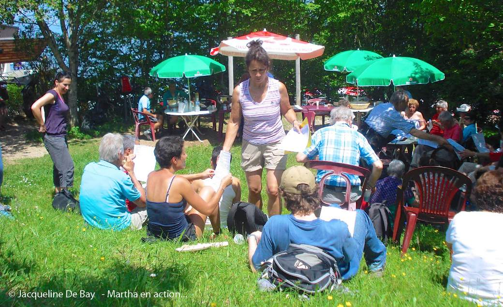
-
L'Assemblée Générale du 16 juin 2013 a eu lieu sur le gazon à côté du Chalet Snack-bar à la station supérieure du téléphérique du Salève, en présence de 41 membres sur les 118 inscrits (44 hommes et 74 femmes) ainsi que d'une quinzaine de sympathisants (nous montons par le Pas de l'Échelle). Les quelques bouteilles de jus de fruits et les sandwiches offerts par l'AGAS ont été liquidés. Dominique a donné lecture (à l'aide d'un micro = haut-parleur) des rapports du président, du trésorier et des vérificateurs des comptes. Les 3 rapports ont été approuvés à l'unanimité. Les cinq membres sortants du comité ont été réélus ainsi que les vérificateurs des comptes qui se sont représentés et ont aussi été réélus. André Mabillard a remercié David Viry pour son dévouement.
-
Le 7 juillet 2013 nous sommes 56 dont 17 nouveaux. 43 font le Pas de l'Échelle, 13 l'Orjobet. DV débroussaille le sentier entre l'autoroute et le golf (accès à la Grande Gorge et Orjobet).
-
Le 14 juillet 2013 nous sommes 47 dont 20 nouveaux. Six personnes font le Petit Salève. Elles descendent par le château d'Etrembières, en face le cimetière, et la Migros d'Etrembières puis elles longent l'Arve jusqu'à Sierne (5h30 de marche). Cinq personnes font la Grande Gorge, 6 l'Orjobet, 29 le Pas de l'Échelle. DV débroussaille le sentier entre l'autoroute et le golf (accès à la Grande Gorge et Orjobet).
-
Le 21 juillet 2013 nous sommes 43 dont 17 nouveaux. C'est la fête de la Thuile. 12 personnes en 3 voitures roulent jusqu'à Beaumont puis montent à pied à la Thuile. Cinq personnes ont l'intention d'aller à la Thuile depuis Veyrier mais elles se trompent de chemin et montent le sentier d'Orjobet. 23 personnes font la Grande Gorge. Trois le Pas de l'Échelle.
-
Le premier septembre 2013 c'est la fête du Salève au Café des Crêts. Il fait beau. Nous sommes 49 dont 15 nouveaux. Sept personnes prennent le téléphérique puis marchent vers le Café des Crêts. 17 personnes vont au Café des Crêts via Orjobet. 25 personnes font le Pas de l'Échelle.
-
Le 22 septembre 2013 nous sommes 68 dont 25 nouveaux. Cinq personnes font le Petit Salève. Quatre personnes montent le sentier des Buis. L'Orjobet est parcouru par 14 personnes. La Grande Gorge par 20 personnes. Le Pas de l'Échelle par 25 personnes. À la descente Martin tombe et se casse un os au-dessus de la cheville gauche. Une semaine plus tard il subit une intervention chirurgicale ostéosynthèse. Plâtre pendant 6 semaines. Hors circuit pour 3 mois.
-
Le 20 octobre 2013 la pluie est annoncée pour toute la journée. Il pleut de 9h30 jusqu'à 15h00. Le téléphérique est fermé jusqu'à 15h30 à cause de vent violent. 17 personnes se trouvent au rendez-vous. Sept montent jusqu'au chalet de la Croix tandis que 9 vont au bistro à veyrier. Une personne prend le bus 8 pour retourner à Genève (DV).
-
Le 27 octobre 2013 il pleut entre 6h00 et 10h20. Le téléphérique est fermé toute la journée à cause de vent violent.
Nous sommes 5 dont 2 nouveaux. Les 5 montent et descendent le Pas de l'Échelle.
-
Le 3 novembre 2013 il pleut entre 6h00 et 11h30. Le téléphérique est fermé de 9h30 à 11h30 à cause de vent violent. Nous sommes 10 dont 1 nouveau. Les 10 montent le Pas de l'Échelle.
-
Le 10 novembre 2013 il pleut légèrement toute la journée. Le téléphérique est fermé entre 9h30 et 12h45 à cause de vent violent (100km là-haut). Nous sommes 8 dont 1 nouveau. Les 8 montent le Pas de l'Échelle.
-
Le 17 novembre 2013 stratus toute la journée, soleil à 1100m. Le téléphérique est fermé jusqu'en avril 2014 pour travaux. Nous sommes 33 dont 6 nouveaux. Six personnes font le Bois Mouton. Cinq la Grande Gorge. Six le Pas de l'Échelle jusqu'à Monnetier. 16 le Pas de l'Échelle.
-
Le 24 novembre 2013 stratus et vent toute la journée. Cinq centimètres de neige sur la crête. Nous sommes 22 dont 7 nouveaux. Tout le monde fait le Pas de l'Échelle. Une Nouvelle a de la peine à la montée et à la descente. Vers le téléphérique le sous-groupe demande à un couple de l'amener en voiture vers Moillesulaz.
Encore quelques statistiques pour l'exercice écoulé: en 2013, le nombre moyen de participants par sortie a été de 25 personnes (minimum 5 le 24 février et le 27 octobre, maximum 81 le 14 avril). Sur 52 sorties, il y a eu (avec répétitions, c.-à-d. que si une personne est venue trois fois on ajoute 3 au total,) 672 femmes (51.5%), 634 hommes (48.5%), 4 enfants (et 18 chiens). Au total, 1310 personnes dont 394 nouvelles (30%) sont venues avec l'AGAS. Sur 52 dimanches, 23 étaient beaux, 9 gris et secs, 9 gris et secs avec soleil là-haut, un pluvieux, 10 variables et zéro neigeux. Depuis mai 1996 et jusqu'à la fin de 2013, il y a eu 17'610 participants (dont 4'540 personnes différentes), et par sortie (chacune est une coïncidence organisée): minimum 2 personnes, maximum 90 personnes; âge minimum 6, âge maximum 85.
En 2013, nous avons parcouru 50 fois le Pas de l'Échelle, 14 fois le Bois Mouton, 14 fois la Grande-Gorge, 11 fois le sentier d'Orjobet (dont 0 fois depuis le Coin et 11 fois depuis Veyrier), 2 fois le Funiculaire, 7 fois le Petit Salève, 3 fois le Facteur, 3 fois les Allumés, 1 fois le Piton (0 depuis le Coin), 1 fois la Thuile (depuis Beaumont), 1 fois la Chavanne (0 depuis le Coin), 1 fois la Pointe du Plan, 4 fois les Buis, 1 fois les Bûcherons, 1 fois montée par le téléphérique (à la fête du Salève). Total = 114 car à plusieurs reprises il y avait au moins 2 destinations différentes le même jour. Les randonnées aux Pitons, la Thuile, la Chavanne et la Pointe du Plan sont réalisables sans la navette qui était mise à disposition par la FEDRE et Veolia pendant l'été les années précédentes. En ce qui concerne les Buis et les Bûcherons l'AGAS ne les fait pas. Ceux qui les font, les font de leur propre initiative (à leurs risques et périls) sans l'aval de l'AGAS.
Un GRAND MERCI à notre ministre des sports, Monsieur Sami Kanaan, pour le soutien financier de la Ville de Genève. Merci également aux membres donateurs, leur geste est grandement apprécié.
Extrait du rapport annuel de l'année 2014
Comité: Président: David Viry. Membres: André Mabillard, Françoise Dayer, Catherine Roset, Martha Muñoz. Vérificateurs des comptes: Dorith Fohry, Karine Kirchner.
Exceptionnellement, le téléphérique était fermé du 17 novembre 2013 au 12 avril 2014.
La marche est un bienfait pour nos organismes et pour nos esprits. Elle nous permet de maintenir notre corps en forme et de laisser nos soucis derrière nous. De plus, elle nous offre l'occasion de forger de solides amitiés, de rencontrer des gens d'autres cultures et de faire fi de la barrière des langues.
- Le 5 janvier 2014 il fait beau. Nous sommes 16 personnes dont 2 nouvelles. Nous montons par le Pas de l'Échelle.
-
Le 12 janvier 2014 il fait gris et sec jusqu'à 1100m, plus haut le soleil brille. Nous sommes 23 personnes dont 8
nouvelles. Une jeune fille (nouvelle) fait demi-tour après 200 mètres car problème de poumons; sa copine retourne avec elle à Genève. Emma rejoint le groupe à 11 heures à Monnetier. Elle emprunte le chemin du funiculaire avec 5 personnes dont Francis qui quitte le groupe très vite pour aller à la Croisette. Les 4 restantes redescendent par le même chemin. Les autres personnes font le bois-mouton.
-
Le 19 janvier 2014 il fait gris et sec. Nous sommes 22 (dont 8 nouveaux). Nous montons par le Pas de l'Échelle.
C'est en France la journée nationale de la raquette à neige à la Croisette.
-
Le 23 mars 2014 giboulée = pluie soudaine et de peu de durée, accompagnée souvent de grêle (= pluie congelée qui tombe par grains). 12 personnes montent le pas de l'Échelle.
-
Le 30 mars 2014 il fait beau (voiles nuageux d'altitude). Nous sommes 43 (dont 14 nouveaux). Trois sous-groupes: Grande-gorge: 3 personnes, Bois Mouton: 8 personnes, Pas de l'Échelle: 32 personnes.
-
Le 6 avril 2014 il fait beau. Nous sommes 41 (dont 12 nouveaux). Deux sous-groupes: Bois Mouton: 16 personnes, Pas de l'Échelle: 25 personnes.
-
Le 13 avril 2014 il fait beau. Nous sommes 47 (dont 18 nouveaux). Trois sous-groupes: Grande-gorge: 1 personne, Orjobet: 17 personnes, Pas de l'Échelle: 29 personnes.
-
Le 20 avril 2014 il fait beau. Nous sommes 25 (dont 3 nouveaux). 4 sous-groupes: Grande-gorge: 2 personnes, Orjobet: 9 personnes, Chavanne: 2 personnes, Pas de l'Échelle: 12 personnes.
-
Le 11 mai 2014 il fait gris et sec jusqu'à midi puis soleil. A 16h bourrasque de grêle pendant cinq minutes. Nous sommes 27 (dont 6 nouveaux). Étant donné que c'est le Trail du Salève nous montons à droite dès l'entrée dans la forêt (sentier réservé d'habitude aux VTT). 3 sous-groupes: Bois-mouton: 17 personnes, Funiculaire: 2 personnes, Pas de l'Échelle: 8 personnes. 4 personnes se trompent à la montée et passent dans le tunnel de l'ancien chemin de fer (ils suivent un couple qui n'était pas avec nous. Pour passer dans le tunnel ils entrent au tunnel en passant sous le grillage et sortent du tunnel en passant sur le grillage).
-
Le 18 mai 2014 il fait beau. Nous sommes 66 (dont 25 nouveaux). 4 sous-groupes: Grande-gorge: 16 personnes, Bois-mouton: 10 personnes, Pas de l'Échelle: 38 personnes, 2 personnes en voiture jusqu'à Beaumont puis à pied jusqu'au Grand Piton et retour.
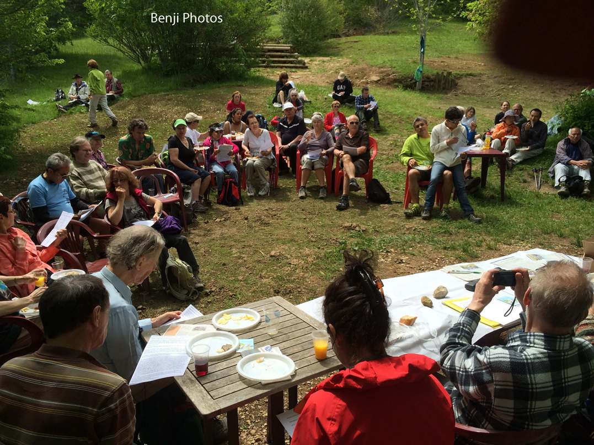
-
L'Assemblée Générale du 25 mai 2014 a eu lieu sur le gazon à côté du Chalet Snack-bar à la station supérieure du téléphérique du Salève, en présence de 34 membres sur les 118 inscrits (45 hommes et 73 femmes) ainsi que d'une quinzaine de sympathisants (40 personnes dont 5
nouvelles montent par le Pas de l'Échelle). Il fait beau. Les quelques bouteilles de jus de fruits et vin et les sandwiches offerts par l'AGAS ont été liquidés. Dominique a donné lecture (à l'aide d'un micro = haut-parleur) des rapports du président, du trésorier et des vérificateurs des comptes. Les 3 rapports ont été approuvés à l'unanimité. Les cinq membres sortants du comité ont été réélus ainsi que les deux vérificatrices des comptes qui se sont représentées et ont aussi été réélues.
André Mabillard a remercié Dominique pour son dévouement. Martin a remercié David Viry pour son travail. Alain a remercié l'équipe pour sa disposition à servir.
-
Le 1 juin 2014 il fait beau. Nous sommes 47 (dont 5 nouveaux). 4 sous-groupes: Grande-gorge: 17 personnes (dont 14 rapides et 3 lents), Bois-mouton: 9 personnes, Pas de l'Échelle: 19 personnes, Piton: 2 personnes. Une cérémonie de l'inauguration du téléphérique a lieu: DV, AM et Benji montent en téléphérique.
-
Le 8 juin 2014 il fait beau et chaud (32°). Nous sommes 42 (dont 15 nouveaux). 5 sous-groupes: Grande-gorge: 4 personnes, Orjobet: 15 personnes, Bois-mouton: 7 personnes, Pas de l'Échelle: 12 personnes, Piton: 4 personnes.
-
Le 29 juin 2014 il pleut (les prévisions météo annoncent pluie toute la journée. Le soleil brille entre 14H et 18h. 18H - 19h orage). Nous sommes 5 (dont 3 nouveaux). Les 5 personnes font le Pas de l'Échelle (2 jusqu'au téléphérique, 3 jusqu'à Monnetier).
-
Le 27 juillet 2014 nous sommes 33 dont 13 nouveaux. Il fait beau. C'est la fête de la Thuile. 4 personnes montent en voiture au col des pitons puis marchent vers la Thuile.
Une dame monte le sentier d'Orjobet. 20 personnes vont à la Thuile (5 via le Grand Piton).
12 personnes font le Pas de l'Échelle.
-
Le 24 août 2014 il fait beau. Nous sommes 40 (dont 12 nouveaux). 4 sous-groupes: Grande-gorge: 1 personne, Orjobet: 13 personnes, Bois-mouton: 16 personnes, Pas de l'Échelle: 10 personnes.
Voici une description de Bibi concernant la journée (source: http://www.bibiweb.ch ).
C'est donc vers 8h15 en ce dimanche matin que je quitte ma voiture à côté du parking du téléphérique et que je j'emprunte le chemin balisé qui mène à Monnetier. Après quelques centaines de mètres sur une route goudronnée pour sortir du village et franchir l'autoroute je me retrouve sur un sentier qui remonte doucement en forêt. Un peu plus haut et après quelques lacets, ça devient un peu plus raide et escarpé, mais quelques protections sont en place pour éviter toute conséquence fâcheuse suite à une éventuelle glissade. Cela fait quelques minutes que j'entends un bruit que je n'arrive pas à identifier et qui vient d'un peu plus haut. Soudain, alors que je me suis arrêtée pour faire une photo, j'entends des pierres qui tombent (ça c'est un bruit que je reconnais tout de suite) et qui passent à quelques mètres devant moi. Je traverse rapidement la zone dangereuse et ne tarde pas à découvrir la source du bruit après le lacet suivant. Un monsieur d'un certain âge (note de DV: il s'agit de Néné
) est accroupi sur les marches en train de balayer toutes les petites pierres accumulées par les dernières pluies. Un petit panneau explique qu'il effectue ce travail bénévolement et il y a même une sébile (note DV: écuelle = assiette creuse de bois, ronde et presque plate) pour ceux qui souhaiteraient laisser une ou deux pièces. Quand j'arrive à sa hauteur, il sursaute car il ne m'a pas entendue arriver et me dit que je lui ai fait peur. Je lui réponds que moi aussi il m'a fait peur quand j'ai failli me prendre des pierres sur la tronche sur le chemin un peu plus bas. Je le félicite pour le boulot qu'il fait, mais lui fais remarquer que ce n'est pas forcément une bonne idée de faire ça un dimanche matin quand il fait beau et qu'il va y avoir plein de monde qui se balade
mais je crois qu'il n'a pas vraiment compris. (fin de citation).
-
Le 31 août 2014 il fait beau. Nous sommes 46 (dont 14 nouveaux). 3 sous-groupes: Grande-gorge: 10 personnes, Bois-mouton: 11 personnes, Pas de l'Échelle: 25 personnes.
-
Le 7 septembre 2014 il fait beau. C'est la fête du Salève à la Chavanne. Nous sommes 54 (dont 18 nouveaux). DV refuse une mère avec un bébé sur le dos (de façon trop brusque d'après Dom). 3 dames vont à la Chavanne depuis Croix-de-Rozon via le Coin et Chez Favre. 7 personnes montent en 2 voitures jusqu'à la Croisette puis elles marchent jusqu'à la Chavanne. 11 personnes (dont une jeune femme aveugle) montent en téléphérique et vont à pied jusqu'à la Chavanne. Claude Pet va à la Chavanne via le sentier d'Orjobet. 10 personnes vont à la Chavanne via le Coin et Chez Favre (3 heures). 7 personnes vont à la Chavanne via la Croisette via le sentier des Allumés (4 heures). 16 personnes font le Pas de l'Échelle. 7 personnes font le Bois-mouton.
-
Le 19 octobre 2014 il fait beau. Nous sommes 62 (dont 17 nouveaux). 5 personnes font le Buis (balade privée non organisée par l'AGAS). Grande-gorge: 20 personnes, Bois-mouton: 4 personnes, Pas de l'Échelle: 33 personnes.
-
Le 26 octobre 2014 il fait beau. Nous sommes 29 (dont 10 nouveaux). Deux sous-groupes: Grande-gorge: 5 personnes (dont la jeune femme aveugle). Un jeune homme rapide va devant, les 4 autres arrivent au resto de l'Observatoire en 5 heures, Pas de l'Échelle: 24 personnes.
-
Du 16 novembre au 30 novembre 2014 pas de téléphérique.
-
Le 28 décembre 2014 il neige légèrement (il fait froid là-haut). Nous sommes 11 (dont 2 nouveaux). 2 sous-groupes: Grande-gorge: 8 personnes (dont Francis qui continue vers la Croisette), Pas de l'Échelle: 3 personnes.
(...)
Encore quelques statistiques pour l'exercice écoulé: en 2014, le nombre moyen de participants par sortie a été de 28 personnes (minimum 5 le 29 juin, maximum 66 le 18 mai). Sur 52 sorties, il y a eu (avec répétitions, c.-à-d. que si une personne est venue trois fois on ajoute 3 au total,) 729 femmes (50%), 717 hommes (50%), 17 enfants (et 16 chiens). Au total, 1463 personnes dont 406 nouvelles (28%) sont venues avec l'AGAS. Sur 52 dimanches, 29 étaient beaux, 14 gris et secs, 4 gris et secs avec soleil là-haut, 4 pluvieux, 0 variables et 1 neigeux. Depuis mai 1996 et jusqu'à la fin de 2014, il y a eu 19'073 participants (dont 4'950 personnes différentes), et par sortie (chacune est une coïncidence organisée): minimum 2 personnes, maximum 90 personnes ; âge minimum 6, âge maximum 85.
En 2014, nous avons parcouru 51 fois le Pas de l'Échelle, 20 fois le Bois Mouton, 23 fois la Grande-Gorge, 15 fois le sentier d'Orjobet (dont 0 fois depuis le Coin et 15 fois depuis Veyrier), 4 fois le Funiculaire, 0 fois le Petit Salève, 1 fois le Facteur, 1 fois les Allumés, 5 fois le Piton (0 depuis le Coin, 1 fois depuis Beaumont), 1 fois la Thuile (depuis Veyrier), 2 fois la Chavanne (0 depuis le Coin), 0 fois la Pointe du Plan, 1 fois le Buis, 1 fois les Bûcherons, 1 fois montée par le téléphérique (à la fête du Salève). Total = 126 car à plusieurs reprises il y avait au moins 2 destinations différentes le même jour. Les randonnées aux Pitons, la Thuile, la Chavanne et la Pointe du Plan sont réalisables sans la navette qui était mise à disposition jadis par la FEDRE et Veolia pendant l'été. En ce qui concerne les Buis et les Bûcherons l'AGAS ne les fait pas. Ceux qui les font, les font de leur propre initiative (à leurs risques et périls) sans l'aval de l'AGAS.
Un grand merci à notre ministre des sports, Monsieur Sami Kanaan, pour le soutien financier de la Ville de Genève. Merci également aux membres donateurs, leur geste est grandement apprécié.
Extrait du rapport annuel de l'année 2015
Comité: Président: David Viry. Membres: André Mabillard, Françoise Dayer, Catherine Roset, Martha Muñoz. Vérificateurs des comptes: Dorith Fohry, Karine Kirchner.
- Le 4.1.2015 il pleut légèrement (1/10) entre 9h15 et 9h45 puis gris et sec jusqu'à 13h30 puis soleil pâle. Nous sommes 11 dont une nouvelle. Deux personnes montent par le Pas de l'Échelle (PE) et descendent par le Facteur. Six personnes montent par le Bois Mouton (BM). Trois personnes montent par le sentier d'Orjobet.
-
Le 18.1.2015 il fait beau et froid (-4°). Nous sommes 25 dont 4 nouveaux. Première neige sur le Salève. C'est la fête de la raquette à neige à la station supérieure du téléphérique du Salève (et non à la Croisette). Bois Mouton: 5 personnes. Grand Gorge (GG): 9 personnes. PE: 11 personnes. Le raccourci entre le banc à Monnetier et le fossile de l'ammonite est gelé donc très glissant. Le poids de la neige fait plier les arbres sur le sentier.
-
Le 25.1.2015 il fait beau et froid (bise). Neige jusqu'en bas. Nous sommes 20 dont 7 nouveaux. BM: 16 personnes en 4 sous groupes: 2 très rapides, 3 rapides, 7 moyens, 4 lents. PE: 4 personnes.
-
Le 1.2.2015 il fait gris et sec et froid. Les crampons font leur apparition. Nous sommes 17 dont 6 nouveaux. PE: 4 personnes. BM: 13 personnes.
-
Le 1.3.2015 la pluie est annoncée pour toute la journée. 6h-10h pluie 1/10, 10h-12h30 gris et sec, 12h30-13h30 pluie 1/10, 13h30-18h gris et sec. 10' de soleil là-haut. Nous sommes 6. PE: 6 personnes.
-
Le 15.3.2015 le téléphérique est hors d'usage pour maintenance pendant 3 semaines. Gris et sec. Nous sommes 17 dont 6 nouveaux. Pas de neige jusqu'à la station supérieure du téléphérique. PE: 17 personnes dont 4 personnes jusqu'à Monnetier.
-
Le 12.4.2015 il fait beau. Nous sommes 40 dont 15 nouveaux. 3 personnes montent en voiture et marchent sur la crête. 2 personnes montent en téléphérique et marchent sur la crête. Orjobet: 12 personnes (dont 7 qui évitent la Corraterie). BM: 9 personnes. PE: 14 personnes.
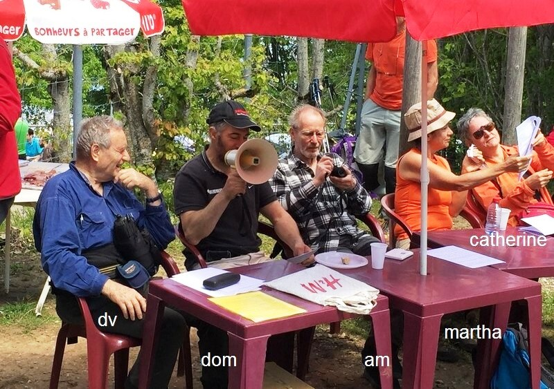
-
L'Assemblée Générale du 24 mai 2015 a eu lieu sur le gazon à côté du Chalet Snack-bar à la station supérieure du téléphérique du Salève, en présence de 42 membres sur les 122 inscrits (47 hommes et 75 femmes) ainsi que d'une quinzaine de sympathisants (60 personnes dont 16
nouvelles montent par le Pas de l'Échelle). Il fait beau. Il restait quelques bouteilles de jus de fruits et de vin mais les sandwiches offerts par l'AGAS ont été liquidés. Dominique a donné lecture (à l'aide d'un micro = haut-parleur) des rapports du président, du trésorier et des vérificateurs des comptes. Les 3 rapports ont été approuvés à l'unanimité. Les cinq membres sortants du comité ont été réélus ainsi que les deux vérificatrices des comptes qui se sont représentées et ont aussi été réélues. André Mabillard a remercié les personnes qui prennent des groupes (=les encadrants) pour leur dévouement. Felicia demande la disponibilité du téléphérique. Alain remercie David Viry pour son travail.
-
Le 7.6.2015 il fait beau. Nous sommes 32 dont 10 nouveaux. 3 personnes montent en voiture et marchent sur la crête. 4 personnes montent par le Facteur puis Sous-Chavanne puis la Thuile puis la Tour du Piton puis Sous-Chavanne puis l'Observatoire puis descendent par le PE. 8 personnes montent la GG (au départ 10 personnes mais 2 personnes abandonnent au golf). PE: 17 personnes. Le téléphérique est hors d'usage toute la journée à cause de l'orage de la veille. A 16h30 un bus arrive à la station supérieure du téléphérique.
-
Le 14.6.2015 il fait gris et sec (pluie annoncée). Nous sommes 28 dont 5 nouveaux. 3 personnes montent en voiture et marchent sur la crête. 12 personnes montent par la Sauge en passant par le cimetière de Monnetier et en descendant vers l'autre coté du Salève. BM: 2 personnes. PE: 11 personnes.
-
Le 5.7.2015 il fait beau et chaud (38° à Genève, 35° à Monnetier). Nous sommes 32 dont 4 personnes montent en voiture et marchent sur la crête. PE: 28 personnes.
-
Le 26.7.2015 il fait beau (quelques gouttes l'après midi, pluie annoncée l'après midi). Nous sommes 50 dont 15 nouveaux. 2 personnes montent en voiture et marchent sur la crête. 2 personnes montent en téléphérique et marchent sur la crête. GG: 5 personnes (seul 3 arrivent la haut). Thuile: 18 personnes (c'est la fête de la Thuile). Le groupe monte par le Facteur et
Sous-Chavanne. 4H30 de marche jusqu'à la Thuile. Au retour le groupe passe par la Corraterie. Le groupe arrive à la station supérieure du téléphérique à 19h15 et donc obligé de descendre à pied le PE. Les premières personnes arrivent à Veyrier à 21h (encore jour); les dernières à 21h50 en utilisant une lampe frontale. PE: 23 personnes.
Cet été, ce n'est pas dans le Valais que les températures ont battu tous les records de chaleur, mais bien à Genève. Selon MétéoSuisse, à trois reprises en juillet (7, 17 et 22/07), un vent de sud-ouest en provenance de Lyon a fait grimper le mercure, qui a dangereusement flirté avec la barre des 40°C.
Les sept premiers mois de 2015 sont les plus chauds jamais enregistrés dans le monde, a annoncé jeudi 20 août 2015 l'Agence américaine Océanique et atmosphérique (NOAA). Les premiers relevés de températures au niveau mondial datent de 1880. Juillet 2015 a battu également un record de chaleur sur la Terre comparativement au même mois depuis plus d'un siècle.
-
Le 23.8.2015 il fait gris et sec. Nous sommes 22 dont 1 enfant et 8 nouveaux. Sauge: 11 personnes. Mère et fils sont lents. Christian reste avec eux. Ils arrivent une demi heure après le groupe. Dom se blesse à la descente vers Esserts en voulant tailler un bâton. Il abandonne. PE: 11 personnes.
-
Le 6.9.2015 il fait beau. Nous sommes 44 dont 1 enfant et 12 nouveaux. 2 personnes montent en voiture et marchent sur la crête. Thuile: 6 personnes (c'est la fête du Salève à la Thuile). Le groupe monte par le Facteur et Sous-Chavanne. 3h30 jusqu'à la Thuile avec pause pique-nique 30 minutes Sous-Chavanne. 3 personnes montent en voiture jusqu'à la Thuile. 4 personnes montent en voiture jusqu'à la Croisette puis marchent jusqu'à la Thuile. PE: 29 personnes.
-
Le 27.9.2015 il fait gris et sec. Nous sommes 52 dont 14 nouveaux. Sauge: 11 personnes. GG: 11 personnes. PE: 30 personnes.
-
Le 18.10.2015 il fait gris et sec. Nous sommes 34 dont 1 enfant et 8 nouveaux. 2 personnes montent en voiture et marchent sur la crête. BM: 14 personnes. Christian voulait faire une variante de la Sauge mais ils rencontrent 2 chasseurs et décident de faire le BM. PE: 18 personnes.
-
Le 25.10.2015 il fait beau. Nous sommes 33 dont 5 enfants et 9 nouveaux. Une variante de la Sauge: 12 personnes. GG: 4 personnes. PE: 17 personnes.
-
Le 1.11.2015 il fait gris et sec jusqu'à midi puis soleil. Nous sommes 32 dont 1 enfant et 3 nouveaux. 2 personnes montent en téléphérique et marchent sur la crête. BM: 3 personnes. GG: 2 personnes. Orjobet: 7 personnes. PE: 17 personnes. Funiculaire: 1 personne.
-
Le 8.11.2015 il fait beau. Nous sommes 47 dont 2 enfants et 17 nouveaux. 2 personnes montent en voiture et marchent sur la crête. Une variante de la Sauge: 3 personnes. Orjobet: 4 personnes. BM: 12 personnes. PE: 26 personnes.
-
Le 15.11.2015 il fait beau. Nous sommes 45 dont 1 enfant et 15 nouveaux. Willy monte en voiture et marche sur la crête. Marc monte à 10h30, il arrive en retard car contrôlé à la frontière à cause des attentats à Paris le vendredi 13. Le téléphérique est en maintenance donc hors d'usage pendant 5 semaines. GG: 13 personnes. PE: 31 personnes.
-
(Tribune de Genève, 22.11.2015) "Les premières neiges sont tombées sur Genève. (...) Sur le Salève, on compte par endroit quelque 10 cm de fraîche poudreuse.
D'ailleurs, il n'a pas fallu attendre longtemps ce matin pour voir les premières luges apparaître sur la piste encore fermée de la Croisette,
au-dessus de Collonges-sous-Salève. (...)"
Source: http://www.tdg.ch/geneve/actu-genevoise/Les-premieres-neiges-sont-tombees-sur-Geneve/story/13125677
-
Le 29.11.2015 il y a pluie fine (1/10) jusqu'à 10h puis gris et sec et froid (0°). Nous sommes 9 dont 1 nouveau. Monika nous apprend une terrible nouvelle: lors de son travail, Christian est tombé du toit vendredi. Il est à l'hôpital entre la vie et la mort. Tout le monde est choqué. 2 personnes montent en voiture et marchent sur la crête. PE: 7 personnes. A 10h30 nous croisons des chasseurs au début du sentier du PE. Ils chassent en tournant à gauche 200 mètres depuis le début de la forêt au pied du Petit Salève. Pour la saison de chasse (du 2e dimanche de septembre et jusqu'au 3e dimanche de janvier) les animateurs de l'AGAS ont reçu des gilets fluorescents.
-
Le 6.12.2015 il fait gris et sec. Nous sommes 21 dont 3 nouveaux. 3 personnes montent en voiture et marchent sur la crête. PE: 18 personnes. A la descente, aux 100 derniers mètres, Olivier glisse et tombe: un entorse à la cheville droite.
-
Le 27.12.2015 il fait beau (comme souvent ces derniers temps, une mer de brouillard sur Genève jusqu'à 600 mètres d'altitude. Il semble que ce soit dû à la condensation car l'air est plus froid que l'eau du lac). Nous sommes 23 dont 6 nouveaux. 2 personnes montent en voiture et marchent sur la crête. 4 personnes montent le Petit Salève, descendent jusqu'à Monnetier puis montent vers la station supérieure du téléphérique. PE: 17 personnes.
Encore quelques statistiques pour l'exercice écoulé: en 2015, le nombre moyen de participants par sortie a été de 28 personnes (minimum 6 le premier mars, maximum 70 le 24 mai lors de l'assemblé générale annuelle). Sur 52 sorties, il y a eu (avec répétitions, c.-à-d. que si une personne est venue trois fois on ajoute 3 au total,) 730 femmes (50%), 718 hommes (50%), 23 enfants (et 10 chiens). Au total, 1471 personnes dont 383 nouvelles (26%) sont venues avec l'AGAS. Sur 52 dimanches, 26 étaient beaux, 23 gris et secs (certains avec soleil là-haut), 3 pluvieux et 0 neigeux. Depuis mai 1996 et jusqu'à la fin de 2015, il y a eu 20'544 participants (dont 5'333 personnes différentes), et par sortie (chacune est une coïncidence organisée): minimum 2 personnes, maximum 90 personnes ; âge minimum 6, âge maximum 85.
En 2015, nous avons parcouru 52 fois le Pas de l'Échelle, 22 fois le Bois Mouton, 13 fois la Grande-Gorge, 16 fois le sentier d'Orjobet, 1 fois le Funiculaire, 5 fois la Sauge (y compris la variante), 1 fois le Petit Salève (suivi du Grand Salève), 3 fois le Facteur (suivi par la Thuile), 0 fois les Allumés, 1 fois le Piton (combiné avec la Thuile), 3 fois la Thuile (2 fois via la Chavanne), 0 fois la Pointe du Plan. Total = 118 car à plusieurs reprises il y avait au moins 2 destinations différentes le même jour. En ce qui concerne les Buis et les Bûcherons, l'AGAS ne les fait pas. Ceux qui les font, les font de leur propre initiative (à leurs risques et périls) sans l'aval de l'AGAS (c'est arrivé 1 fois cette année pour les Buis).
Un grand merci à notre ministre des sports, Monsieur Sami Kanaan, pour le soutien financier de la Ville de Genève.
L'année 2015 a été et de loin la plus chaude de l'histoire moderne. L'Agence océanique et atmosphérique américaine (National Oceanic and
Atmospheric Administration, NOAA) et l'Agence spatiale américaine (National Aeronautics and Space Administration, NASA) (...) l'ont confirmé conjointement le 20 janvier 2016.
Les relevés des deux agences, établis de manière indépendante, diffèrent légèrement. Mais ils s'accordent sur le fait que les températures moyennes ont été les plus hautes depuis le début des mesures, en 1880.
(... ) L'année 2015 se classe ainsi largement en tête des années les plus torrides, devant, dans l'ordre, 2014, 2010, 2013, 2005, 2009 et 1998. Jamais encore un tel différentiel n'avait été enregistré entre deux années chaudes.
Extrait du rapport annuel de l'année 2016
Comité: Président: David Viry. Membres: André Mabillard, Françoise Dayer, Georges Fleury, Willy Gay. Vérificateurs des comptes: Dorith Fohry, Karine Kirchner.
-
Le 3.1.2016, le ciel est gris et sec et il fait froid. Nous sommes 15 dont 2 nouveaux. Une personne monte en téléphérique. 6 personnes montent par le Pas de l'Échelle (PE). 8 personnes montent par le Bois Mouton (BM).
-
Le 10.1.2016, il pleut (estimation David Viry (DV), échelle 1/10) toute la journée. 5 courageux montent par le Pas de l'Échelle jusqu'à Monnetier.
-
Le 24.1.2016 il fait beau (traces de neige en haut du Salève). Nous sommes 31 dont 12 nouveaux. 5 personnes montent par le sentier d'Orjobet (ORJ). PE: 26 personnes. Un jeune homme abandonne après 100 mètres (PE) car il a peur.
-
Le 31.1.2016, la météo annonce des pluies fortes toute la journée. En réalité, il pleut légèrement jusqu'à 10h puis il fait gris et sec. Le téléphérique est fermé. Nous sommes 5 hommes dont 1 nouveau. Nous montons le PE.
-
Le 6.3.2016, il fait gris et sec entre 9h et 13h puis il neige (estimation DV, échelle 1/10) entre 13h et 15h puis il y a du soleil. Neige annoncée. Certains randonneurs mettent les crampons. Parfois les crampons collent au sol et le randonneur tombe en avant. Nous sommes 7 et nous montons le PE.
-
Le 20.3.2016, il fait beau. Nous sommes 31 dont 11 nouveaux. 8 personnes montent Orjobet. 14 = BM. 9 = PE. Nous avons un souci car personnes ne veut être encadrant (= responsable).
-
Le 27.3.2016, il pleut (échelle: 1/10) avant 10h puis il fait gris et sec. Nous sommes 3 hommes. Le bus 8 arrive à 9h59 au lieu de 10h03. Ceci peut conduire à 2 problèmes: (1) certains randonneurs ont manqué le bus qui avait de l'avance sur l'horaire ; (2) en nous calibrant sur l'arrivée du bus et sans vérifier l'heure sur nos montres, nous risquons d'être partis trop tôt. Nous montons le PE.
-
Le 3.4.2016, il fait gris et sec. Nous sommes 40 dont 20 nouveaux. 2 personnes montent en voiture et marchent sur les crêtes. 2 personnes montent en téléphérique et marchent sur les crêtes. BM: 11 personnes. PE: 25 personnes.
-
Le 10.4.2016, il fait beau. Nous sommes 39 dont 2 enfants et 11 nouveaux. 3 personnes montent en voiture. ORJ = 10 personnes. BM = 8 personnes. PE = 18 personnes (2 rapides, 7 moyennes, 9 lentes).
-
Le 15.5.2016, il fait beau. Nous sommes 35 dont 1 enfant, 12 nouveaux et 1 chien. Une personnes monte en téléphérique. ORJ = 4 personnes. Grande Gorge (GG) = 11 personnes. PE = 19 personnes. Sur l'itinéraire passant tout droit après la vierge, le grand chien blanc, passe à droite du rocher sans problème.
-
Le 19.6.2016, il y a du soleil, malgré la pluie annoncée. Nous sommes 28 dont 8 nouveaux. Variante Sauge = 7 personnes. BM =10 personnes (les 2 groupes se croisent au poteau car les 7 sont beaucoup plus rapides). Les 17 personnes montent à l'observatoire. PE = 11 personnes.
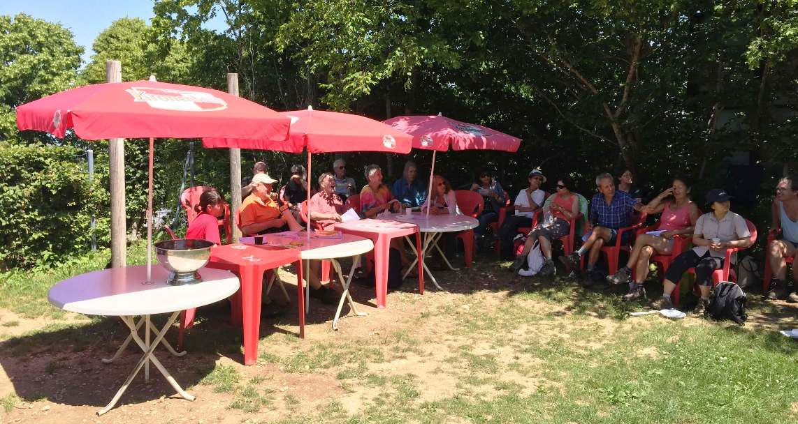
-
L'Assemblée Générale du 10 juillet 2016 a eu lieu sur le gazon à côté du Chalet Snack-bar à la station supérieure du téléphérique du Salève, en présence de 31 membres sur les 122 inscrits (49 hommes et 73 femmes) ainsi que d'une dizaine de non-membres (36 personnes dont 12
nouvelles montent par le Pas de l'Échelle). Il fait beau et chaud (33° à Genève). Il restait une brique de jus de fruits mais les petits pains, le fromage et la charcuterie offerts par l'AGAS ont été terminés. André a lu (à l'aide d'un micro = haut-parleur) le rapport du Président. Micaela a lu les rapports du trésorier et des vérificateurs des comptes. Les 3 rapports ont été approuvés à l'unanimité. Catherine et Martha quittent le comité. Georges Fleury et Willy Gay ont été élus au comité. Les deux vérificatrices des comptes qui se sont représentées sont réélues. André Mabillard a remercié les personnes qui vont devant et qui se font suivre par le groupe (= les encadrants) pour leur dévouement. Alain remercie David Viry pour son travail. David Viry constate qu'il est de plus en plus difficile de trouver des encadrants, les anciens ne veulent prendre aucune responsabilité. Ceci nous contraint à parfois refuser d'organiser un sentier, malgré la demande.
-
Le 17.7.2016, il fait beau. Nous sommes 33 dont 9 nouveaux. 2 personnes montent en voiture et marchent sur la crête. GG = 5 personnes. ORJ = 8 personnes. PE = 18 personnes. NéNé nettoie les escaliers. Une jeune fille très lente arrive à Monnetier 20 minutes après le groupe. Elle rouspète car le groupe va trop vite.
-
Le 24.7.2016, il fait beau (pluie annoncée l'après midi). Nous sommes 31 dont 13 nouveaux. Une personne montent en téléphérique et marche sur la crête. GG = 7 personnes. BM = 9 personnes. PE = 11 personnes. 3 femmes vont en voiture jusqu'à Beaumont puis montent à pied à la Thuile: c'est la fête de la Thuile.
-
Le 7.8.2016, il fait beau. Nous sommes 49 dont 23 nouveaux 4 enfants et 2 chiens. Willy et André montent en voiture. 2 dames montent en voiture jusque Monnetier. BM = 6 personnes. PE = 12 personnes. GG = 12 personnes. ORJ = 15 personnes.
-
Le 21.8.2016, il fait beau. Nous sommes 45 dont 14 nouveaux 2 enfants et 1 chien. 3 personnes montent en voiture. BM = 6 personnes. PE = 31 personnes. ORJ = 5 personnes.
-
Le 28.8.2016, deux voitures ont été détruites par le feu. Le Service d'incendie et de secours est intervenu vers 5h au coeur du village de Veyrier.
(...) Une enquête est en cours pour déterminer les causes du sinistre. (Tribune de Genève, http://www.tdg.ch/geneve/actu-genevoise/deux-voitures-detruites-feu/story/23600506)
-
Le 4.9.2016 = la fête du Salève a lieu à la Croisette. Nous sommes 38 dont 12 nouveaux. Il fait gris et sec. 3 personnes montent en voiture et marchent jusqu'à la Croisette. 6 personnes montent par le Facteur. GG Croisette = 8 personnes. GG Corraterie = 8 personnes. 5 femmes montent en téléphérique à 9h30 et vont à la Croisette avec le groupe d'Etrembières. 6 personnes montent en téléphérique à 10h15 et continuent jusque la Croisette. PE-Croisette = 5 personnes. 2 personnes montent le PE.
-
Le 25.9.2016, le pied droit de David Viry (DV) heurte une tige en métal se trouvant au milieu du sentier. DV perd l'équilibre et plonge en avant sans arriver à enrayer la chute. La douleur est violente et sur le moment DV a peur de s'être cassé une côte.
-
Le 2.10.2016, il fait gris et sec. Nous sommes 50 dont 33 nouveaux (dont 24 ESN= Erasmus Students Network), 3 enfants et 1 chien. André monte en téléphérique. PE = 9 personnes. BM = 41 personnes.
-
Le 23.10.2016, il pleut (échelle 1/10) toute la journée en intermittence, une bruine automnale. Nous sommes 7 dont 3 nouveaux. ORJ - rapide 2 personnes. ORJ - lent = 5 personnes.
-
Le 30.10.2016, il fait gris et sec. Nous trouvons un soleil pâle en haut du Salève dès 12h. Nous sommes 30 dont 10 nouveaux. 3 personnes montent en voiture. ORJ = 3 personnes. BM = 7 personnes. PE = 17 personnes. NéNé nettoie les escaliers.
-
Le 6.11.2016, il fait beau et frais. Il y a les premières neiges de la saison sur le Salève. Pluie annoncée.
-
Le 20.11.2016, il fait beau et froid. Le téléphérique est à l'arrêt pour sa révision annuelle. Nous sommes 27 dont 13 nouveaux.
-
Le 11.12.2016, il fait beau et froid (-2°). Sur le sentier du PE, le sol est gelé et le sentier est très dangereux sans crampons surtout au début avant les rambardes (rampes métalliques = barrières). Le téléphérique est à l'arrêt pour sa révision annuelle. Nous sommes 21 dont 4 nouveaux. 2 personnes montent en voiture. 3 dames abandonnent après 10 minutes au PE. DV doit se mettre à 4 pattes 4 fois sur le PE. Le sentier de la GG est parfaitement praticable. GG = 8 personnes. PE = 11 personnes.
-
Le 18.12.2016, il fait beau et froid. Nous sommes 13 dont 2 nouveaux. 2 personnes montent en voiture. Le sentier de la Corraterie est praticable. ORJ = 2 personnes. PE = 9 personnes.
-
Le 25.12.2016, il fait gris, sec et froid. Le soleil pâle apparaît à 12h à l'Observatoire pendant 30 minutes. Le téléphérique est à l'arrêt. Nous sommes 8 dont aucun nouveau. 4 personnes montent en voiture. 4 personnes montent le PE.
Après quelques chutes de neige précoces début novembre, un épisode de foehn a vite dégarni la neige de tous les sommets en dessous de 2000 mètres d'altitude. En ce début de mois de décembre 2016, le ciel bleu règne sur les Alpes depuis plusieurs semaines tandis que Genève et les vallées alpines restent sous un épais stratus qui ne déchire que très rarement.
Depuis le début des mesures, il y a 150 ans, jamais un mois de décembre n'avait été aussi sec que celui qui vient de s'achever.
(...) Encore rares il y a quelques années, les épisodes de sécheresse se sont multipliés ces dernières années.
Et si la Suisse s'est plutôt focalisée sur les inondations jusqu'à présent, le réchauffement climatique a incité l'Office fédéral de l'environnement (OFEV) à inclure ce nouveau phénomène dans la liste des catastrophes naturelles. (...)
Source: www.20min.ch
Les statistiques générales pour l'exercice écoulé sont les suivantes: en 2016, le nombre moyen de participants par sortie a été de 24 personnes (minimum 3 le 27 mars, maximum 50 le 2 octobre). Sur 52 sorties, il y a eu (avec répétitions, c.-à-d. que si une personne est venue trois fois on ajoute 3 au total) 647 femmes (52%), 588 hommes (48%), 20 enfants (et 13 chiens). Au total, 1255 personnes dont 417 nouvelles (33%) sont venues randonner avec l'AGAS. Sur 52 dimanches, 28 étaient beaux, 15 gris et secs (dont certains avec soleil là-haut), 7 pluvieux et 2 neigeux. Depuis mai 1996 et jusqu'à la fin de 2016, il y a eu 21'800 participants (avec répétitions), dont 5'750 personnes différentes, et par sortie (chacune est une coïncidence organisée c.-à-d. Chaque fois sans inscription préalable): minimum 2 personnes, maximum 90 personnes ; âge minimum 6, âge maximum 85.
En 2016, nous avons parcouru 51 fois le Pas de l'Échelle, 18 fois le Bois Mouton, 20 fois la Grande-Gorge, 24 fois le sentier d'Orjobet, aucune fois le Funiculaire, 1 fois la Sauge (y compris la variante), 1 fois le Petit Salève (suivi du Grand Salève), 1 fois le Facteur, 1 fois la Thuile depuis Beaumont, aucune fois les Allumés, aucune fois la Chavanne, aucune fois le Piton, aucune fois la Thuile depuis Veyrier, aucune fois la Pointe du Plan. Au total = 117 courses ont été réalisées, car à plusieurs reprises il y avait au moins 2 destinations différentes le même jour. En ce qui concerne les Buis et les Bûcherons, l'AGAS n'organise pas de courses sur ces itinéraires. Ceux qui les font, les font de leur propre initiative (c.-à-d. à leurs risques et périls) sans l'aval de l'AGAS.
Un grand merci à la Ville de Genève et au ministère de la culture et du sport, pour son soutien financier.
Abréviations: Pas de l'Échelle = PE; Bois Mouton = BM; Grande Gorge = GG; Orjobet = ORJ
Extrait du rapport annuel de l'année 2017
Comité: Président: David Viry. Membres: André Mabillard, Françoise Dayer Georges Fleury, Willy Gay. Vérificateurs des comptes: Dorith Fohry, Karine Kirchner.
Le mois de janvier 2017 s'est révélé plus froid que la norme calculée entre 1981 et 2010 en Suisse (20 Minutes du 31.1.2017). ---
Le Pas de l'Échelle était fermé pendant 4 mois et demi (16.1-3.6) à cause des travaux et des blocs menaçants.
-
Le 1.1.2017, le ciel est gris et sec et il fait froid (soleil dès 700m). Le téléphérique n'est pas en service. Nous sommes 4 dont 1 nouveau. Nous montons le Pas de l'Échelle (PE). Au raccourci entre Monnetier et la vierge, le sol est gelé. Un membre monte seul à 11h30.
-
Le 8.1.2017, le ciel est gris et sec. A Genève, un centimètre de neige, à Monnetier 2 cm, à la station supérieure du téléphérique 3 cm. Nous sommes 10. Nous montons le Pas de l'Échelle. AM monte en téléphérique.
-
Le 15.1.2017, le ciel est gris et sec. Il fait froid (-5°). Le PE est givré. Rodolphe monte le sentier d'Orjobet. 18 personnes, dont 8 nouvelles, montent le Pas de l'Échelle. AM monte en téléphérique.
-
Le 22.1.2017, le ciel est gris et sec. Le PE est fermé pour travaux. 2 personnes montent la Grande gorge (GG). 12 personnes montent le Petit Salève via les Eaux-belles (on évite le petit pont en prenant par la droite), dont GF et Odette avec sa chienne (Moustache).
-
Le 19.2.2017 nous sommes 37 dont 14 nouveaux. Il fait beau. Willy et Daisy montent en voiture. 20 personnes montent le Petit Salève via les Eaux-belles dont GF et Yuko. 5 personnes descendent à pied par le Petit Salève (Pierre au Roy, ancien funiculaire, château d'Étrembières, Eaux-belles). Une femme descend par auto-stop depuis Monnetier. Orjobet (ORJ) = 12 personnes dont Odette et sa chienne. GG = 2 dames.
-
Le 21.5.2017 nous sommes 31 dont 17 nouveaux (avec 10 chinois). Il fait beau. 2 dames montent en téléphérique. 7 personnes montent le Petit Salève via les Eaux-belles et le château d'Étrembières dont Louis et Alain B. GG = 14 personnes. ORJ = 8 personnes.
-
Le 28.5.2017 nous sommes 25 dont 8 nouveaux. Il fait beau et chaud (30°). Le PE est toujours en travaux. Alain B et Jacques roulent en voiture et montent le Vuache. Sept personnes montent le Petit Salève via les Eaux-belles et le château d'Étrembières. GG = 10 personnes. ORJ = 6 personnes.
-
Le 4.6.2017 nous sommes 15 dont 7 nouveaux. Il pleut jusque 11 heures. Le PE est réparé. Bois mouton (BM) = 7 personnes. PE = 3 personnes. ORJ = 5 personnes.
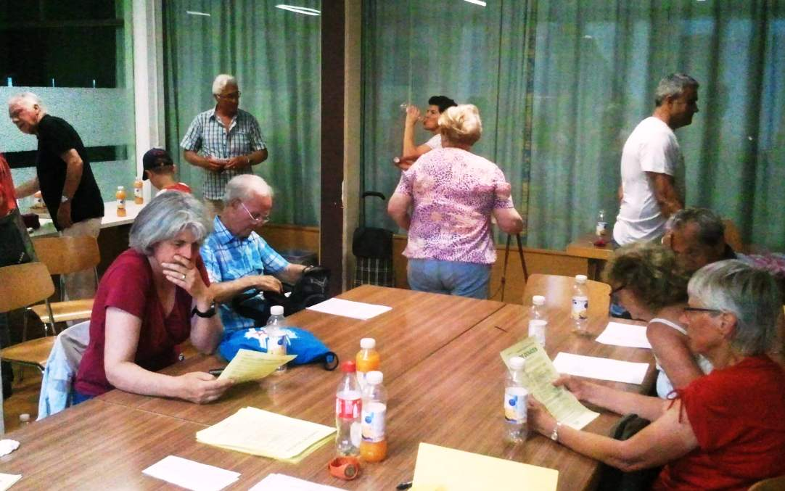
-
Le jeudi 22 juin 2017 nous avions notre Assemblée Générale. Après convocation des membres, l'Assemblée Générale s'est tenue à la paroisse protestante située av Wendt 55 (Servette) en présence de 18 membres sur les 120 inscrits (70 femmes et 50 hommes). Une collation (boissons, petits pains, fromage et charcuterie) est offerte par l'AGAS. Les 18 présents, chacun à leur tour, déclinent leurs noms. Certains ont parlé de leur expérience avec l'AGAS. Jacqueline et Georges donnent lecture du rapport du président et des comptes. Karine donne lecture du rapport des vérificateurs de comptes. Les trois rapports ont été approuvés à l'unanimité. Les membres du comité ainsi que les deux vérificatrices de comptes se sont représentés et ont été réélus.
-
Le 24.9.2017 nous sommes 29 dont 7 nouveaux. Il fait beau. 5 personnes vont à la Thuile via la Croisette (7 heures de marche). Odette et 2 chiens (Moustache et Darwin) montent la Sauge et descendent par le chemin du Funiculaire et le château d'Étrembières. ORJ = 4 personnes. PE = 19 personnes.
-
Le 1.10.2017 nous sommes 25 dont 9 nouveaux. Il fait beau. Le bus 8 arrive à 10h17 car Genève est bloqué par 2 « géants ». 9 personnes montent la Sauge. A Essert, elles ramassent des châtaignes tombées à terre. A 13h30, une rencontre avec 20 chiens de chasse. PE = 16 personnes.
-
Le 24.12.2017 nous sommes 11 dont 2 nouveaux. Il fait beau. AM monte en téléphérique. PE = 8 personnes. Un énorme chien noir suit le groupe depuis Veyrier et jusqu'à la forêt. Il suit un homme depuis le début du sentier dans la forêt et continue seul. Il effraie beaucoup de monde. A 14h00 il arrive à la station supérieure du téléphérique et 10 minutes plus tard à l'Observatoire.
-
Le 31.12.2017 nous sommes 9 dont 2 nouveaux. Il fait beau. AM monte en téléphérique. PE = 8 personnes. Pas de neige entre Veyrier et Monnetier. Sentier glacé entre la station supérieure du téléphérique et l'Observatoire.
Les statistiques générales pour l'exercice écoulé sont les suivantes: en 2017, le nombre moyen de participants par sortie a été de 21 personnes (minimum 2 le 5 novembre, maximum 47 le 11 juin). Sur 53 sorties, il y a eu (avec répétitions, c.-à-d. que si une personne est venue trois fois on ajoute 3 au total) 562 femmes (52%), 510 hommes (48%), 21 enfants (et 68 chiens). Au total, 1093 personnes dont 420 nouvelles (38%) sont venues randonner avec l'AGAS. Sur 53 dimanches, 27 étaient beaux, 22 gris et secs (dont certains avec soleil en haut), 3 pluvieux et 1 neigeux. Depuis mai 1996 et jusqu'à la fin de 2017, il y a eu 22'900 participants (avec répétitions), dont 6'170 personnes différentes, et par sortie (chacune est une coïncidence organisée c.-à-d. chaque fois sans inscription préalable): minimum 2 personnes, maximum 90 personnes ; âge minimum 6, âge maximum 85.
En 2017, nous avons parcouru 33 fois le Pas de l'Échelle, 9 fois le Bois Mouton, 24 fois la Grande-Gorge, 27 fois le sentier d'Orjobet, 3 fois le Funiculaire, 2 fois la Sauge (y compris la variante), 21 fois le Petit Salève (suivi du Grand Salève), 1 fois le Vuache, 1 fois la Thuile,
1 fois les Allumés, Aucune fois les sentiers suivants: le Facteur, la Chavanne, le Piton, la Pointe du Plan.
Au total = 122 courses ont été réalisées, car à plusieurs reprises il y avait au moins 2 destinations différentes le même jour.
Remarque: En ce qui concerne les Buis et les Bûcherons, l'AGAS n'organise pas de courses sur ces itinéraires. Ceux qui les organisent, les parcourent donc de leur propre initiative (c.-à-d. à leurs risques et périls) sans l'aval de l'AGAS.
Par mesure de précaution, pendant la période de chasse (2e dimanche de septembre au 3e dimanche de janvier), nous évitons les sentiers où la chasse a lieu.
Un grand merci au ministère de la culture et du sport de la Ville de Genève, au ministère de la cohésion sociale et la solidarité de la Ville de Genève ainsi qu'à la Conseillère d'État du Département de l'instruction publique, de la culture et du sport du canton de Genève, pour leur soutien financier.
Abréviations: Pas de l'Échelle = PE , Bois Mouton = BM, Grande Gorge = GG, Orjobet = ORJ.
Extrait du rapport annuel de l'année 2018
Comité: Président: David Viry. Membres: André Mabillard, Georges Fleury, Willy Gay. Vérificateurs des comptes: Dorith Fohry, Karine Kirchner.
-
Le 7.1.2018, le ciel est gris et sec. Nous sommes 16 dont 2 nouveaux. 10 personnes montent le Pas de l'Échelle (PE). 6 personnes montent la Grande Gorge (GG).
-
Le 18.3.2018, le ciel est gris et sec. Nous sommes 15 dont 5 nouveaux. 9 personnes montent le Pas de l'Échelle (3 d'entre eux descendent par le Facteur puis la douane de Croix-de-Rozon). 4 personnes montent le sentier d'Orjobet (ORJ). 2 personnes montent le Pas de l'Échelle puis le Petit-Salève puis la station supérieure du téléphérique.
-
Le 25.3.2018, il fait beau (8°). Nous sommes 21 dont 9 nouveaux. 8 personnes montent le Pas de l'Échelle. 13 personnes montent le Bois Mouton (BM) (2 d'entre eux descendent par le Facteur puis la douane de Croix-de-Rozon).
-
Le 1.4.2018, il fait gris et sec (5°). Nous sommes 8 dont 2 nouveaux. 4 personnes montent le Pas de l'Échelle. 4 personnes montent le sentier du Funiculaire.
-
Le 8.4.2018, il fait beau (16°). Nous sommes 44 dont 20 nouveaux. 32 personnes montent le Pas de l'Échelle (3 d'entre eux descendent par le Sauvage - une variante du Facteur - puis la douane de Croix-de-Rozon). 3 personnes montent la Grande Gorge. 6 personnes montent le sentier d'Orjobet. 3 personnes montent le Pas de l'Échelle puis le Petit-Salève puis la station supérieure du téléphérique.
-
Le 15.4.2018, il fait beau (20°). Nous sommes 50 dont 19 nouveaux. 22 personnes montent le Pas de l'Échelle. 10 personnes montent la Grande Gorge. 10 personnes montent le sentier d'Orjobet. 8 personnes montent le Petit-Salève via les Eaux-Belles puis la station supérieure du téléphérique. Deux chinoises (Yanyun et Yang Ning abandonnent avant la GG).
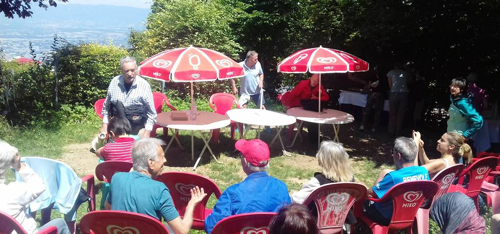
-
Le 24.6.2018, il fait beau. Nous sommes 33 dont 5 nouveaux. 18 personnes montent le Pas de l'Échelle. 15 personnes montent le sentier d'Orjobet. L'Assemblée Générale a lieu sur le gazon à côté du Chalet Snack-bar à la station supérieure du téléphérique du Salève, en présence de 28 membres sur les 119 inscrits (50 hommes et 69 femmes) ainsi que d'une dizaine de non-membres. Le jus de fruits a beaucoup de succès, le fromage aussi, la viande sèche un peu moins. Gil Viry lit (sans l'aide d'un micro = haut-parleur) les rapports du président et du trésorier, David Viry lit le rapport des vérificateurs des comptes. Les 3 rapports sont approuvés à l'unanimité. Françoise Dayer ayant quitté Genève et également le comité de l'AGAS, les quatre autres membres sortants du comité ont été réélus ainsi que les deux vérificatrices des comptes qui se sont représentées. André Mabillard annonce à l'assemblé que Dominique Lanoir va se marier (en Chine), il remercie DV pour son dévouement à l'association. Esther Um suggère la fabrication de T-Shirts avec impression « AGAS » devant et derrière ou des casquettes. Ursi Frey trouve que l'organisation de l'AGAS est exemplaire.
-
Le 22.7.2018, il fait beau. Nous sommes 22 dont 1 nouveau. 13 personnes montent le Pas de l'Échelle (4 d'entre eux descendent par le Facteur puis la douane de Croix-de-Rozon). 9 personnes montent à la Thuile par le haut (c.-à-d par la Croisette, en 4 heures). C'est la fête annuelle de la Thuile. Au retour, ils montent au Piton puis descendent à la Croisette et enfin à la station supérieure du téléphérique en 2h30. Total: 6h30 de marche.
-
Le 5.8.2018, il fait beau et chaud. Nous sommes 43 dont 28 nouveaux (dont 20 jeunes garçons de 15-16 ans membres du club de foot de Meyrin ainsi que leur moniteur et une maman). 6 personnes montent le Pas de l'Échelle. 24 personnes montent la Grande Gorge. 2 personnes montent le sentier d'Orjobet. 11 personnes montent le Bois Mouton. Trois voitures attendent les jeunes à l'Observatoire, les autres descendent en téléphérique. Quatre randonneuses (Maguy, Catherine, Martha, Hong) partent de Croix-de-Rozon et montent le Grand Piton par en bas (en passant par Chez Favre) puis descendent par la Croisette et le Facteur.
-
Le 12.8.2018, il fait beau. Nous sommes 29 dont 8 nouveaux. 18 personnes montent le Pas de l'Échelle (2 randonneuses parmi eux descendent par les Allumés pour atteindre la douane de Croix-de-Rozon tandis que 2 autres randonneuses descendent par le Bois Mouton). 2 personnes montent la Grande Gorge. 9 personnes montent le sentier d'Orjobet. Une des 2 randonneuses qui descendait par le Bois Mouton tombe en marchant sur le lacet détaché de sa chaussure après le cimetière de Monnetier et se blesse au genou et à la main. Elle est soignée par un habitant infirmier.
-
Le 26.8.2018, il fait beau. Nous sommes 29 dont 12 nouveaux. 16 personnes montent le Pas de l'Échelle. 2 personnes montent les Allumés. 11 personnes montent le sentier d'Orjobet. Un joli vélo d'une participante est volé à l'arrêt Veyrier-douane.
-
Le 2.9.2018, il fait beau. Nous sommes 28 dont 4 nouveaux. Aujourd'hui, c'est la fête annuelle du Salève à la Pile dont l'AGAS a été exclue cette année. 3 personnes montent le Pas de l'Échelle. 6 personnes montent la Grande Gorge. 7 personnes vont à la Pile via le Pas de l'Échelle. 10 personnes vont à la Pile via la Grande Gorge puis la Grange Gaby et les Rochers de Faverges. 2 personnes vont à la Pile en montant en téléphérique. Elles passent par la crête car l'indication de la fête était erronée.
-
Le 16.9.2018, il fait beau. Nous sommes 43 dont 20 nouveaux. 13 personnes montent le Pas de l'Échelle. 7 personnes montent la Grande Gorge. 23 personnes montent le sentier d'Orjobet. A Monnetier, les randonneurs observent une surprise: un bébé chevreuil blessé qui essaie de se cacher, les chasseurs aurait-ils tué sa maman?
-
Le 4.11.2018, il fait entre couvert et beau. Nous sommes 29 dont 6 nouveaux. 18 personnes montent le Pas de l'Échelle. 11 personnes montent le sentier d'Orjobet. Elles font une variante: elles passent le haut du Trou de la Tine puis par la crête et la Grange Gaby pour arriver à la station supérieure du téléphérique.
-
Le 18.11.2018, il fait couvert. Nous sommes 28 dont 18 nouveaux. Le téléphérique est fermé pour sa révision annuelle pendant 4 dimanches. 18 personnes montent le Pas de l'Échelle. 10 personnes montent le sentier d'Orjobet, parmi eux une randonneuse ayant mal aux genoux à la descente. Elle fait de l'auto-stop, les autres arrivent à Veyrier 15 minutes avant la nuit.
-
Durant les 4 premiers dimanches de décembre 2018 soit il pleut soit la pluie est annoncée. Nous étions 2, 2, 5, 8 personnes au rendez-vous. Le 23.12, il y a un arbre tombé à travers le sentier du Pas de l'Échelle (quelques mètres avant les rambardes). Pour une fois, le Syndicat Mixte du Salève a réagi vite: l'arbre a été coupé le lendemain.
-
Le 30.12.2018, il fait couvert jusqu'à 12h30 puis grand soleil. Nous sommes 18 dont 6 nouveaux. 15 personnes montent le Pas de l'Échelle. 3 personnes montent le sentier de la Grande Gorge. Vers 13h30 le téléphérique cesse de fonctionner à cause du vent mais ceux qui sont à la station supérieure du téléphérique à ce moment-là peuvent descendre.
-
Le 9.12.2018, les TPG ont modifié l'horaire du bus 8 le dimanche. Au lieu d'un bus chaque 20 minutes, un bus circule chaque 15 minutes. Par conséquent le bus 8 arrive à Veyrier-douane à 10h10 au lieu de 10h05. Nous modifions alors également l'heure de départ.
-
Le vendredi 14.12.2018, Cathy et Rose organisent un repas au restaurant Les Nomades, Rue des Grottes (cuisine marocaine et libanaise) à 19h30. 13 personnes sont présentes (chacun paie son repas).
Les statistiques générales pour l'exercice écoulé sont les suivantes: en 2018, le nombre moyen de participants par sortie a été de 23 personnes (minimum 2 le 2 décembre et le 9 décembre, maximum 50 le 15 avril). Sur 52 sorties, il y a eu (avec répétitions, c.-à-d. que si une personne est venue trois fois on ajoute 3 au total) 657 femmes (57%), 495 hommes (43%), 38 enfants (et 50 chiens). Au total, 1190 personnes dont 356 nouvelles (30%) sont venues randonner avec l'AGAS. Sur 52 dimanches, 28 étaient beaux, 20 couvert (dont certains avec soleil en haut), 4 pluvieux et 0 neigeux. Depuis mai 1996 et jusqu'à la fin de 2018, il y a eu 24'090 participants (avec répétitions), dont 6'526 personnes différentes, et par sortie (chacune est une coïncidence organisée c.-à-d. chaque fois sans inscription préalable): minimum 2 personnes, maximum 90 personnes ; âge minimum 6, âge maximum 85.
En 2018, nous avons parcouru 52 fois le Pas de l'Échelle, 9 fois le Bois Mouton, 22 fois la Grande-Gorge, 29 fois le sentier d'Orjobet, 1 fois le Funiculaire, 1 fois la Sauge (y compris la variante), 11 fois le Petit Salève (suivi du Grand Salève), 1 fois la Thuile, 2 fois les Allumés, 1 fois la Pile, Aucune fois les sentiers suivants: le Facteur, la Chavanne, le Piton, la Pointe du Plan. Au total = 129 courses ont été réalisées, car à plusieurs reprises il y avait au moins 2 destinations différentes le même jour.
Remarque: En ce qui concerne les Buis, la Petite Gorge, les Bûcherons, les Voûtes (Petit Salève), l'AGAS n'organise pas de courses sur ces itinéraires. Ceux qui les empruntent, les parcourent donc de leur propre initiative (c.-à-d. à leurs risques et périls) sans l'aval de l'AGAS.
Par mesure de précaution, pendant la période de chasse (2e dimanche de septembre au 3e dimanche de janvier), nous évitons les sentiers où la chasse a lieu.
Je tiens ici à remercier tous les animateurs (= accompagnateurs bénévoles) qui acceptent d'animer la marche (Odette, Rodolphe, Monika, Philippe, etc..).
Un grand merci au Ministère de la culture et du sport de la Ville de Genève, ainsi qu'à la Conseillère d'État du Département de l'instruction publique, de la culture et du sport du canton de Genève, pour leur soutien financier.
Abréviations: Pas de l'Échelle = PE , Bois Mouton = BM, Grande Gorge = GG, Orjobet = ORJ.